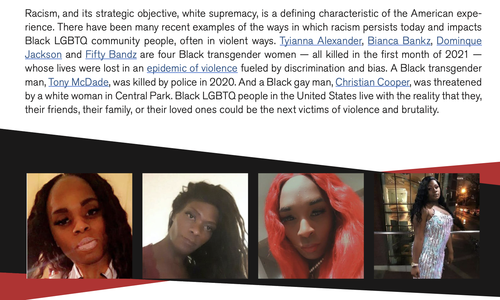
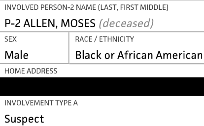
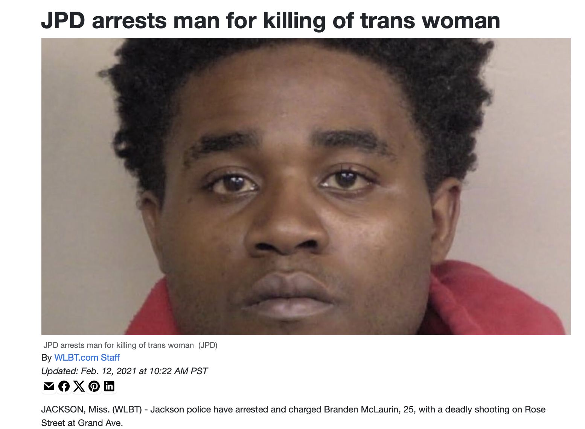
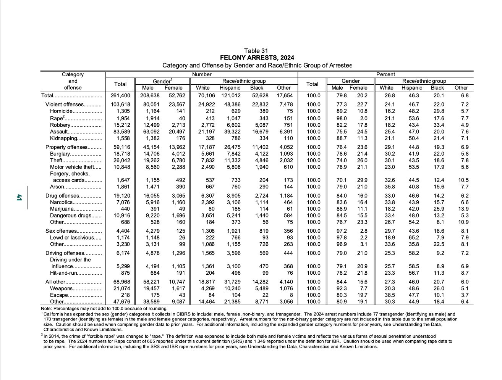
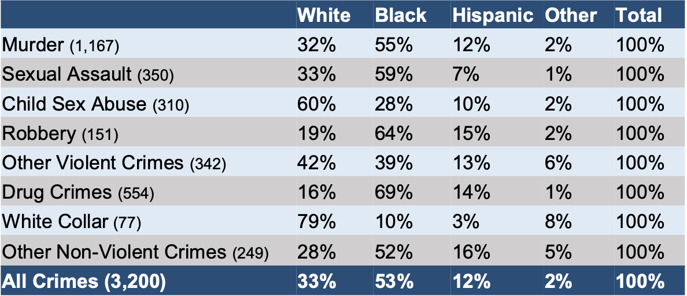

Transgender Comprehensive Lethal Evidence Analysis Report
Case-level analysis of every documented transgender homicide in the United States, 2015–2024. All data independently verified through court records and local news coverage.
The Human Rights Campaign has published comprehensive annual reports documenting the names and stories of transgender people killed in America since 2015. Their data is the foundation of this study. But HRC never reported who was actually committing the killings, and almost every institution that cited their data attributed the violence to an “epidemic” of White supremacy and societal transphobia. HRC’s own president blamed “White supremacy” in congressional testimony. This study took HRC’s victim lists and did what HRC never did: independently verified every case from 2015 to 2024 against court records, news coverage, and police statements to identify who the perpetrators actually were (N = 304 victims; 186 identified suspects (189 racial classifications due to three dual-coded cases)). The findings are the categorical opposite of the narrative. Black suspects account for 123 of 189 identified perpetrators (65.1%), nearly five times their 13.6% population share. White suspects account for 34 (18.0%), less than one-third their 59.3% population share. In every year from 2015 to 2024, Black suspects outnumbered White suspects by at least 2–to–1, and in most years by far greater margins. In 2020 (the year institutions blamed White supremacy), zero White suspects were identified. Approximately 80% of cases are intraracial, mirroring FBI homicide data exactly. 90% of identified suspects are male; 92% of victims are biological males. This is biological males killing biological males within the same racial group: the dominant homicide pattern in the United States. Only 3.3% resulted in confirmed hate crime determinations. The #1 motive is intimate partner violence, not bias. Solve rates average 61%, at or above national benchmarks. Approximately 92% of victims in this dataset are biological males (transgender women). Their homicide rate is not elevated above young Black non-transgender men; it is approximately one quarter of it. Dinno (2017) reported a rate of 95.1 per 100,000 for young Black biological males living as women and compared it to non-transgender women (40.9), producing an alarming multiplier. But Dinno’s own paper reports the rate for Black non-transgender men aged 15–34 in the same period: 367 per 100,000. The entire “epidemic” was built on comparing biological males to biological females and calling the pre-existing sex gap a transgender crisis. Institutions diagnosed the wrong cause: the violence is intraracial, intimate, and structurally indistinguishable from the dynamics driving Black homicide nationally. Nearly every major institution that cited this data attributed it to White supremacy, societal transphobia, and legislative hostility. This study shows it is overwhelmingly intimate partner violence, committed by people the victims knew, following the same racial and circumstantial patterns as American homicide generally. It is rare in any field of research for the data to so thoroughly invert the prevailing narrative. The very dataset that institutions used to declare a White supremacy–driven epidemic reveals, when actually analyzed at the case level, an overwhelmingly disproportionate Black suspect rate that is not merely inconsistent with that framing but its direct inverse.
PRINCIPAL FINDINGS
This study analyzed all 304 cases of fatal violence against transgender individuals documented by the Human Rights Campaign from 2015 to 2024 and produced the following findings:
- Black suspects account for 65.1% of identified perpetrators (123 of 189), nearly five times the Black population share of 13.6%. White suspects account for 18.0% (34 of 189), less than one-third their 59.3% population share.
- This racial distribution is consistent with general homicide patterns, not unique anti-transgender bias. A contextual model incorporating FBI intraracial homicide rates predicts a 67.6% Black suspect rate; the observed 65.1% falls below this prediction.
- Approximately 80% of cases are intraracial, mirroring FBI single-victim/single-offender homicide data. Transgender homicide follows the same racial dynamics as American homicide generally.
- Only 3.3% of cases resulted in confirmed hate crime determinations. Even under a liberal sensitivity analysis assuming Unknown-motive cases contain double the bias rate of known cases, the figure reaches only 11.6%.
- The primary identified motive is intimate partner violence, not bias. The institutional framing of anti-transgender violence as driven by societal transphobia and White supremacy is not supported by case-level evidence.
- Solve rates average 61%, at or above national benchmarks, and these identifications are confirmed by case outcomes, not merely arrests. Case files document at least 120 convictions and guilty pleas, including 56 guilty pleas, 28 life sentences or LWOP, 10 confessions corroborated by physical evidence, and 34 cases with surveillance video. 91% of Black homicide victims nationally are killed by Black offenders (FBI, Expanded Homicide Data Table 6, 2019). This is not what arrest bias looks like. It is what intraracial homicide looks like.
- In 2020, zero White suspects were identified, the same year institutional rhetoric most aggressively attributed anti-transgender violence to White supremacy.
- Young Black transgender women (biological males) comprise 69% of all victims, yet their homicide rate is approximately one quarter that of young Black non-transgender men. Dinno (2017) reported homicide rates for young Black biological males living as women of approximately 95.1 per 100,000. This was compared to Black non-transgender women aged 15–34 (~40.9 per 100,000), producing an alarming 2.3× multiplier. But these victims are biological males. Dinno’s own paper reports the rate for Black non-transgender men aged 15–34 in the same period: 367 per 100,000. Against this baseline, the rate for biological males living as women of 95.1 is not elevated. It is 3.9 times lower. Dinno’s gender identity framework produced the female comparison; the male comparison, which tells a very different story, appears in the same paper but was not foregrounded. To our knowledge, no institution that cited the 2.3× figure has acknowledged the male figure in the same paper. The entire “epidemic” was built on comparing biological males to biological females and calling the pre-existing sex gap a transgender crisis.
- The aggregate transgender homicide rate remains below the general population rate, which does not support characterizing fatal violence against the transgender population broadly as an “epidemic.” However, this aggregate is driven down by the large majority of transgender people who face very low homicide risk. The term “epidemic” obscures where the danger actually is: young Black transgender women (biological males), killed by people they knew, in circumstances that look nothing like a hate crime.
- The violence is biological males killing biological males. 90% of identified suspects are male. 92% of victims are biological males (transgender women). This is the single most common homicide pattern in the United States: the FBI’s Supplementary Homicide Reports show approximately 90% of offenders and 78% of victims are male nationally. Combined with the intraracial finding (~80% same-race pairings), the complete picture is Black biological males killing Black biological males in the context of intimate relationships and sexual encounters. Every dimension of this violence, race, sex, motive, and solve rate, matches the baseline of American homicide. Nothing about it is unique to transgender identity.
Since 2013, the Human Rights Campaign Foundation has published annual reports titled “An Epidemic of Violence,” documenting fatal violence against transgender people in the United States. These reports became the authoritative source behind presidential proclamations, congressional resolutions, AMA declarations, and celebrity open letters, all framing the violence as a product of societal transphobia, legislative hostility, and systemic racism. But HRC’s reports never examined the data at the case level. They do not report suspect demographics, code motive evidence, compare outcomes to national benchmarks, or test whether the patterns differ from general homicide dynamics. No other study has done so either. The entire institutional consensus was built on data that no one independently analyzed.
This study used HRC’s own victim lists as its source framework, then independently verified all 304 cases from 2015 to 2024 against court records, local news coverage, police statements, and autopsy reports. For each case, suspect demographics were identified, bias motivation was coded against a four-tier framework, circumstances were categorized, and case outcomes were tracked. The results are presented below.
Population figures: U.S. Census Bureau, American Community Survey (ACS), 2020–2023 estimates. Black alone non-Hispanic: 13.6%; White alone non-Hispanic: 59.3%; Hispanic or Latino: 19.1%; Asian and all other: 8.0%. Suspect data: independently verified, 2015–2024 (N = 189).
Key Finding: Only 10 of 301 coded cases (3.3%) resulted in confirmed bias/hate crime determinations. The vast majority of cases were coded Unknown (55%), driven primarily by unsolved cases, or No Evidence (28%), where documented alternative motives such as intimate partner violence, robbery, or disputes were present. This does not mean bias was absent, but it does challenge the common advocacy framing that all or most of these homicides are hate crimes.
Why discovery/panic is coded “Suspected,” not “Confirmed”: A hate crime requires evidence of premeditated targeting: seeking out a victim because they are transgender. Discovery/panic cases are reactive: a person learns of the victim’s transgender status during an intimate encounter and responds with violence. The act is criminal and the response is disproportionate, but the motive is interpersonal reaction, not ideological targeting. Collapsing this distinction into “hate crime” inflates the confirmed bias count and obscures the actual dynamics driving the violence (see Objection 6 in Discussion for extended analysis).
Note: 163 of 304 cases (54%) had unknown or unclear motives, mostly unsolved cases. The true motive distribution may differ from what is shown here. N = 186 unique suspects (189 racial classifications; 2 suspects in 2015 and 1 in 2016 were coded under two racial categories).
Prior research (Dinno 2017) compared these biological male victims’ homicide rate to non-transgender women, producing an alarming 2.3× multiplier that institutions cited as evidence of a transgender-specific crisis. But the biologically appropriate comparison is non-transgender men of the same age and race. Dinno’s own paper reports the rate for Black non-transgender men aged 15–34: 367 per 100,000. The rate for biological males living as women of 95.1 per 100,000 is not elevated above the male baseline. It is approximately one quarter of it, nearly four times lower. The “epidemic” framing was built on a comparison that conflated gender identity with biological sex. The male rate appears in the same published paper.
The HRC Foundation report Black LGBTQ People and Compounding Discrimination (June 2021, page 2) specifically names four Black transgender women killed in January 2021 as evidence that White supremacy is driving the violence, citing “an epidemic of violence fueled by discrimination and bias.” This study independently verified every one of those cases through local news and court records. Here is what the evidence shows:



HRC published their report in June 2021. By that date, Brooks and McLaurin had already been arrested. The case facts were public record. HRC’s own memorial page for Fifty Bandz acknowledges she “was killed by someone she knew.” They knew who killed these women. They blamed White supremacy anyway.
This is not an isolated pattern. As documented in the case study below this one, former President Obama named Tony McDade alongside George Floyd and Breonna Taylor at an Obama Foundation town hall in June 2020 as a victim of police violence against a transgender person of color. McDade had fatally stabbed 21-year-old Malik Jackson minutes earlier and then pointed a gun at responding officers. The institutional reflex to frame transgender individuals as victims of systemic racism operated independently of whether the facts of any individual case supported that framing.

On a building at 2013 Neighbors Alley in Midtown Sacramento, a public mural memorializes Chyna Gibson, a Black transgender performer shot ten times in a New Orleans parking lot in 2017. The right panel reads “Protect Our Trans Daughters.” The left reads “White Silence = Violence.” NOPD identified two Black men as persons of interest (not suspects, persons of interest) and explicitly stated there was “nothing demonstrating that this is a hate crime.” No white person has ever been connected to her death. In this dataset, Black suspects account for 123 of 189 identified perpetrators: 65.1%, nearly five times the Black share of the U.S. population. The mural does not name a suspect, mention intimate partner violence, or acknowledge any of this. It skips the data and proceeds directly to the narrative.
Consider the reverse. If white men were killing Black transgender women at over four times their population share and a mural appeared reading “Black Silence = Violence,” the building would not survive the week. The phrase would be catalogued as a hate crime. The artists would be investigated. The city would issue a public apology. Every institution cited in this study would mobilize against it. But when the actual perpetrators are disproportionately Black and the mural blames white people, no one objects. Not because no one knows, but because knowing would require confronting uncomfortable truths that no one in American public life is permitted to say out loud. Consider the world this creates: stating the opposite of the truth is considered brave, and it gets put on a wall. Stating the actual truth would get that same wall burned down and the person who said it investigated. That is the world you are living in.
The mural can be viewed on Google Street View at 2013 Neighbors Alley, Sacramento, California (image dated February 2025).
Malik Jackson was 21 years old. He worked at Five Guys in Tallahassee. His boss said he would arrive before the restaurant opened, sitting in the parking lot waiting for someone to unlock the door. He loved to fish. He loved to dance. His aunt described him simply: “Malik was a good kid. Malik didn’t get in any trouble. Malik smiled a lot.”
Tony McDade was a 38-year-old Black transgender man (biological female) released from a ten-year federal prison sentence for armed robbery four months earlier. He entered a relationship with Malik’s mother, Jennifer Jackson. According to the Jackson family and police records, McDade pistol-whipped Jennifer in her home and sent threatening texts including “I’ll kill for you and you.” Malik told McDade to leave and stop disrespecting his mother. On the morning of May 27, 2020, McDade posted a Facebook Live video threatening to kill five people. Shortly after, he walked to Jennifer’s home, where Malik was sitting in his car before work, and stabbed him in the neck. Malik died at the hospital. COVID-19 restrictions prevented his mother from entering the building, even as she begged to see him. McDade fled, pulled a gun on responding officers, and was shot and killed. A grand jury ruled the use of force justified.

Obama Foundation Town Hall, June 3, 2020 | “Reimagining Policing in the Wake of Continued Police Violence”
One week later, former President Barack Obama hosted an Obama Foundation town hall titled “Reimagining Policing in the Wake of Continued Police Violence.” He named Tony McDade alongside George Floyd, Breonna Taylor, and Ahmaud Arbery as victims whose memory demanded a reimagining of American policing (verified by The Advocate). The remarks strongly suggest no one at the Obama Foundation verified the facts of the case. No one mentioned Malik Jackson. His mother, who was not allowed to hold her dying son’s hand, watched a former president memorialize the man who killed him. The Jackson family’s attorneys responded publicly: “We believe that if President Obama knew exactly what happened on May 26th and May 27th, he would not have made those statements. And we believe an apology should be stated to the family of Malik Jackson.” No apology was ever issued.
When a local activist was asked whether McDade’s actions should factor into the public response, she answered: “It doesn’t matter what he did.” Malik Jackson’s aunt offered a different view: “Malik Jackson’s life mattered too.”
Malik Jackson is not in this dataset. He was not transgender. He was a 21-year-old Black man who went to work every day and loved to fish and was murdered by someone the police had been called about the night before. His name was never read on a debate stage. No president said his name. No mural was painted. The institutional consensus had no use for Malik Jackson, because his death did not serve the narrative. He was the wrong kind of victim, killed by the wrong kind of person, in the wrong kind of story. So they said the name of the person who killed him instead, and they called it justice.
This study contains two distinct layers, and the reader should understand the difference.
The empirical layer is the core of this document. It consists of independent case-level data collection, verification against primary sources (court records, news coverage, booking photos, police statements), demographic coding, four-tier bias motive classification, circumstance categorization, and benchmarking against national homicide data. These components, Sections I through V and Section VIII (Abstract, Introduction, Literature Review, Methodology, Results, References), follow standard scientific research conventions. Every data point is sourced, every methodology decision is documented, every limitation is stated. A reader interested only in the empirical findings can read these sections and draw their own conclusions.
The responsive layer exists because this study was necessitated by specific, testable, empirical claims made by named institutions, the Human Rights Campaign, elected officials, the American Medical Association, and major media organizations, that were built on this same dataset but never tested at the case level. HRC’s president attributed the violence to “White supremacy” in congressional testimony. The AMA declared an “epidemic.” A sitting president named specific individuals as victims of systemic racism. These are not abstract academic positions. They are factual claims with policy consequences, and they are contradicted by the data. Sections VI–VII (Discussion, Conclusion), the robustness checks (Objections 1–9), the case studies, and the supplemental data analyses address these claims directly. They are structured as responses to institutional assertions rather than as standalone findings, because the assertions themselves are what made this research necessary.
The data does not change between layers. The responsive sections apply the same dataset, the same methodology, and the same sourcing standards as the empirical core. Only the format changes: instead of presenting findings in isolation, the responsive layer tests specific institutional claims against the evidence. A standard academic paper would present findings and stop. This study could not, because the institutional consensus it challenges is not merely wrong in the abstract, it has directed resources, shaped legislation, and framed public understanding of who is killing transgender Americans and why. Correcting the record requires engaging the record.
Section IX (Origin & Acknowledgments) documents how this study came about and discloses the author’s background.
Prior Academic Research
Research on fatal violence against transgender people in the United States has been limited by data availability. Key prior contributions include:
- Stotzer (2009) conducted one of the earliest literature reviews documenting violence against transgender individuals. Her key finding was that individuals known to the victims, as well as strangers, were physically and sexually assaulting transgender people at high rates, a result consistent with this study’s finding that interpersonal violence is a dominant circumstance. Stotzer also noted that existing data relied on advocacy reports and media coverage rather than criminal justice records, and that methodological limitations made it “impossible to determine causes or determinants of violence”: a gap this study directly addresses.
- Dinno (2017) published one of the few peer-reviewed epidemiological analyses, estimating transgender homicide rates using population denominators and concluding that transgender people, particularly Black transgender women, face elevated homicide risk. Dinno is an associate professor at the OHSU–Portland State University School of Public Health. Dinno’s study compared transgender women (biological males) to non-transgender women (biological females), producing a dramatic rate disparity: 95.1 vs. 40.9 per 100,000. However, because these victims are biologically male, the appropriate epidemiological comparison is non-transgender men of the same age and race. Dinno’s own paper reports this figure: 367 per 100,000 for Black non-transgender males aged 15–34. Against this baseline, the rate for biological males living as women is not elevated; it is approximately one quarter of the male rate, nearly four times lower. Dinno’s paper itself notes that 6 of 12 estimation scenarios produce a rate for biological males living as women lower than the non-transgender male rate. The cross-sex comparison that institutions have cited measures the pre-existing male–female homicide gap, not a transgender-specific phenomenon.
- HRC Annual Reports (2013–present) provide the most widely cited annual tracking of fatal anti-transgender violence. These reports compile victim lists and generally frame the deaths as part of an “epidemic” of hate violence. However, HRC does not systematically analyze suspect demographics, motive evidence, or case outcomes; the reports primarily memorialize victims and advocate for policy responses. This study’s findings challenge the “epidemic” framing at virtually every level of analysis.
- Gruberg et al. (2021, Center for American Progress) analyzed the intersection of economic marginalization and violence against transgender people, arguing that structural factors including poverty, housing instability, and survival sex work increase vulnerability to violence. This study did not measure economic conditions and therefore cannot confirm or refute these structural claims; however, the suspect demographic and circumstance data suggest that the proximate drivers of this violence are interpersonal (intimate partner conflict, sexual encounters, and disputes) rather than the structural or political forces emphasized in institutional framing.
- FBI Hate Crime Statistics began including gender identity as a bias category in 2013. Federal data consistently shows a small number of gender-identity-motivated hate crimes reported annually, far fewer than advocacy estimates.
Gap This Study Fills
No prior study has independently verified each individual case on HRC’s victim lists against primary sources (court records, local news, law enforcement statements) to produce a case-level dataset with suspect demographics, verified bias motive coding, circumstance categorization, and case outcomes across a full decade. Existing literature has generally relied on one of two approaches: (1) advocacy reports that assume anti-transgender bias as the default motive, or (2) aggregate federal data (FBI UCR/NIBRS) that severely undercounts hate crimes due to voluntary reporting.
This study occupies a distinct middle ground: it uses HRC’s victim lists as the most comprehensive available source framework, but rejects HRC’s interpretive framing in favor of independent case-level analysis. The result is a dataset that can inform both advocacy and academic discussion with greater empirical precision than either approach alone.
The Institutional Consensus
For over a decade, the institutional narrative around fatal violence against transgender people has attributed this violence to White supremacy, societal transphobia, and legislative hostility. This framing has not been confined to any single sector. It has been advanced simultaneously by presidents and presidential candidates, by the U.S. Congress, by the American Medical Association, by the nation’s largest LGBTQ advocacy organizations, by Hollywood actors, producers, and showrunners, by peer-reviewed academic scholarship, and by mass-signed celebrity open letters. It constitutes what may be the most complete institutional consensus on any social issue in recent American life. And this dataset shows it is empirically wrong. The following is a representative but far from exhaustive catalogue:
- HRC President Alphonso David (June 2020), in a statement explicitly connecting anti-transgender violence to White supremacy: “We must all demand change. That means changing the systems and structures. That means examining the ways that we, each of us — knowingly or unintentionally — support these systems of White supremacy through our actions, inactions, complicity, and indifference.” (HRC, “Black Lives Matter”)
- HRC 2021 State Equality Index, framing transgender violence within a White supremacy framework: “The past year has underscored how White supremacy has a toxic grip on our democracy — a reality that too many of us have lived with for far too long.” (HRC 2021 State Equality Index)
- Tori Cooper, HRC Transgender Justice Initiative Director (November 2023): “Almost two-thirds of the victims reported on were Black trans women, a tragedy that reflects an appalling trend of violence fueled by racism, toxic masculinity, trans misogynoir and transphobia.” (HRC 2023 Report)
- President Barack Obama (June 3, 2020), at an Obama Foundation town hall titled “Reimagining Policing in the Wake of Continued Police Violence,” named Tony McDade alongside George Floyd, Breonna Taylor, and Ahmaud Arbery as victims of a system that “devalues” Black lives. McDade was a Black transgender man (biological female) who had fatally stabbed 21-year-old Malik Jackson before being killed by a Tallahassee police officer who was subsequently cleared by a grand jury. Obama framed McDade’s death as police violence against a transgender person of color. (Obama Foundation Town Hall, June 3, 2020)
- President Joe Biden (November 2020), Transgender Day of Remembrance statement: “We must work to end the epidemic of violence and discrimination against transgender and gender-nonconforming Americans.” (American Presidency Project)
- President Joe Biden, 2024 Transgender Day of Visibility Proclamation: “An epidemic of violence against transgender women and girls, especially women and girls of color, continues to take too many lives. Let me be clear: All of these attacks are un-American and must end.” He attributed the violence to “extremists” and “hateful laws.” (GLAAD Fact Sheet)
- Vice President Kamala Harris (November 2019): “In 2019, at least 22 transgender Americans — mostly Black trans women — have been targeted and murdered. We can never stop saying and remembering their names. On Transgender Day of Remembrance, we must recommit to seeking justice for the lives taken and ending this epidemic.” (The Hill)
- Sen. Cory Booker (D-NJ), writing in The Advocate (July 2019), drawing a direct line from Emmett Till to transgender homicides: “These individual acts of hatred are not only singular acts of unspeakable violence — they reveal our collective failure. Because the crisis facing trans Americans is not limited to acts of terror, it is institutional.” He attributed the violence to “transphobic language and policy” and “the dehumanization, discrimination, and prejudice that gives birth to fear and to shame.” (The Advocate, “A Crisis of Silence Is Killing Trans Women of Color”)
- Sen. Elizabeth Warren (D-MA), at the December 2019 presidential debate closing statement and at the September 2019 LGBTQ forum in Iowa, read aloud the name of every transgender person killed that year and pledged to read the names of transgender victims annually in the White House Rose Garden if elected president. She attributed the violence to societal discrimination and legislative hostility, citing “how trans women — particularly trans women of color — are at risk.” (Metro Weekly)
- Mayor Pete Buttigieg, at the CNN/HRC Equality Town Hall (October 2019), after protesters chanting “Trans lives matter!” interrupted his appearance: “I do want to acknowledge what these demonstrators are speaking about, which is the epidemic of violence against Black trans women in this country right now. I believe, or would like to believe, that everybody here is committed to ending that epidemic.” (CNN)
- Julián Castro, former HUD Secretary (November 2019), attributing the violence to economic marginalization: “91% of murdered transgender people are Black trans women. 34% of Black trans women live in extreme poverty. We need to alleviate their struggle to make ends meet — see their humanity — and take action to end the violence they face.” (The Hill)
- U.S. Rep. Sarah McBride (D-DE), then HRC National Press Secretary (2018), the first openly transgender person to address a major party convention, attributed the violence to hatred embedded “in both laws and hearts” and stated that it is “hate-based and a byproduct of existing prejudice inflamed by politicians all too eager to appeal to the darker undercurrent of society.” (NBC News)
- U.S. House Resolution 886 (2023), introduced by Rep. Jayapal and co-sponsored by dozens of members of Congress, formally resolving that “the United States is currently experiencing an epidemic of violence against transgender Americans” and calling it an urgent government priority. (H.Res.886, 118th Congress)
- The American Medical Association (June 2019), formally declaring an “epidemic of violence against the transgender community, especially the amplified physical dangers faced by transgender people of color,” and adopting policy to lobby Congress and law enforcement agencies on the issue. AMA Board Member Dr. S. Bobby Mukkamala stated: “Fatal anti-transgender violence in the U.S. is on the rise and most victims were black transgender women.” (AMA)
- GLAAD President Sarah Kate Ellis (November 2019), after a presidential debate failed to mention Transgender Day of Remembrance: “It is a slap in the face to LGBTQ Americans that not one of the candidates nor the media could join in mourning the transgender women of color killed this year in anti-transgender violence.” (The Advocate)
- Actress Laverne Cox (Orange Is the New Black), speaking on Democracy Now! (October 2019), described the violence as “a backlash against our existence” and attributed it to a society that stigmatizes transgender identity: “When we look at the epidemic of violence against trans folk, so many people think that our identities are inherently deceptive, inherently suspect.” She told BuzzFeed News: “Your attraction to me as a trans woman is not a reason to kill me.” (Democracy Now!)
- Author and activist Janet Mock (Pose, Netflix), writing in Allure (July 2017): “It’s this deplorable rhetoric that leads many cis men, desperately clutching their heterosexuality, to yell at, kick, spit on, shoot, burn, stone, and kill trans women of color. Until cis people — especially heteronormative men — are able to interrogate their own toxic masculinity and realize their own gender performance is literally killing trans women, cis men will continue to persecute trans women and blame them for their own deaths.” (NBC News)
- 465+ celebrities, feminist leaders, and public figures (March 2021), including Selena Gomez, Ariana Grande, Sarah Paulson, Gabrielle Union-Wade, Rosie Perez, and Janelle Monáe, signed a GLAAD open letter declaring solidarity with trans women. GLAAD President Sarah Kate Ellis stated: “As the epidemic of violence facing trans women continues to grow, and while lawmakers relentlessly attack the rights and dignity of trans youth across this country, this letter is a loud and powerful statement of solidarity.” (ABC News / GMA)
- White House Press Secretary Karine Jean-Pierre (March 30, 2023), speaking from the White House briefing room podium three days after Audrey Hale, a transgender-identified individual, shot and killed three 9-year-old children and three staff members at The Covenant School, a private Christian elementary school in Nashville: “It is shameful, it is disturbing, and our hearts go out to the trans community as they are under attack right now.” The institutional reflex to frame the transgender community as victims persisted even when a transgender individual had just committed a mass shooting at an elementary school. (Fox News, March 30, 2023)
- Scholar Shon Faye, in The Transgender Issue: An Argument for Justice (2021), widely assigned in university gender studies courses, argues that “transphobia is revealed as a direct product of capitalism, racism, and state power” and explicitly frames the “abolition of capitalism, carceral violence, and White supremacy as central tenets of trans liberation.” (Bulletin of Applied Transgender Studies, book review)
- Scholar Cal Horton, publishing in the British Journal of Sociology (2025), proposes a formal theory of “cis-supremacy” explicitly modeled on theories of White supremacy, arguing that anti-trans discrimination has “roots in colonialism and White supremacy.” The paper cites Jules Gill-Peterson’s Histories of the Transgender Child (2018), which contends that rigid gender systems were imposed through colonial violence and that “the racialised and colonial roots of cis control and oppression” explain contemporary anti-trans violence. (British Journal of Sociology / Sage)
The pattern is unmistakable and total. Across every sector of American institutional life, from the President of the United States to the nation’s largest medical association, from U.S. Senators running for president to the first transgender member of Congress, from Emmy-winning actresses to Oscar-nominated actors, from showrunners with Netflix deals to peer-reviewed academic journals, from open letters signed by hundreds of celebrities to formal theories published in the British Journal of Sociology, from GLAAD to the AMA to the halls of Congress itself, the unanimous framing attributes this violence to White supremacy, societal transphobia, legislative hostility, and a culture that “demeans anyone who dares challenge the gender binary.” The framing is so total that it has become the only acceptable lens through which to discuss these deaths. It operates across entertainment, politics, medicine, academia, journalism, and social media advocacy as a single, unified, unquestioned narrative. Not one of these statements, across a full decade of annual reports, presidential proclamations, Senate floor speeches, debate performances, celebrity open letters, academic monographs, press releases, essays, and television storylines, has ever mentioned the demographic identity of the people actually committing these homicides.
Data Collection
Source Framework: The Human Rights Campaign’s annual reports on fatal violence against transgender and gender-non-conforming people (2015–2024) were used as the victim identification framework. Each named victim was independently verified against local news coverage, court records, and law enforcement statements. The ten annual HRC source reports used in this study are linked below:
Study Period: The study period begins in 2015 because this is the first year in which HRC published a comprehensive annual report identifying individual victims by name. Although HRC states it began tracking fatal violence in 2013, the author was unable to locate published HRC reports identifying individual victims for 2013 or 2014; available evidence indicates that only aggregate totals were reported for those years. Without individual victim identifications, independent case-level verification against court records, news coverage, and police statements is not possible. The study therefore covers the complete span of HRC’s formally published annual victim reports: from the first year of publication (2015) through the most recent complete year (2024), constituting a full decade of data.
Independent Verification: For each case, the researcher located primary source documentation (news reports, police press releases, court dockets, autopsy information where available) to verify victim identity, manner of death, suspect identity, case status, and documented circumstances. HRC’s own characterizations, bias assessments, and narrative framing were not used as data inputs.
Coding Framework:
Suspect Race/Ethnicity: Coded from mugshots, court records, news photography, and law enforcement physical descriptions. Categories: Black, White, Hispanic, Asian/Other, Unknown. Two suspects in 2015 and one in 2016 were coded under two racial categories (Hispanic and White, or Black and Hispanic) because their ethnicity could not be reduced to a single group; they are counted once in each applicable category, yielding 189 racial classifications across 186 unique suspects.
Anti-Trans Bias Motive: Four-tier coding: Confirmed (hate crime charges filed or explicit law enforcement statement), Suspected (evidence of animus without formal charges), No Evidence (documented alternative motive), Unknown (insufficient information). HRC bias assessments were not used.
Case Status: Coded as Solved (arrest, conviction, or guilty plea), Unsolved (no suspect identified), or Pending (charges filed, awaiting trial). Solve rates are calculated as (cases with at least one identified suspect) divided by (total victims in that year), including police-involved cases in the denominator. This produces slightly more conservative solve rate figures than excluding police cases from the denominator.
Circumstances: Independently categorized from primary source documentation: intimate partner/domestic/family violence, sex work encounter, dispute/argument, robbery/theft, discovery/panic, drug-related, serial killing, police-involved, concealment of relationship, random/stranger, in custody, incidental, or unknown/unsolved.
Reproducibility
All case data is derived from publicly accessible sources. Any researcher with access to court records, local news archives, and law enforcement statements can independently verify every data point in this study. The methodology is designed for full reproducibility.
Reliability and Verification: This study was conducted by a single researcher, and formal inter-rater reliability testing (e.g., Cohen’s kappa) was not performed. This is a recognized limitation. However, several features of the dataset mitigate reliability concerns. First, suspect race coding relied primarily on objective sources (mugshots and booking photographs) rather than subjective assessment; in the small number of cases where photographic evidence was unavailable, law enforcement physical descriptions were used. Second, the bias motive coding framework was designed to minimize subjective judgment: “Confirmed” requires formal hate crime charges or explicit law enforcement statements, and “No Evidence” requires documented alternative motives. The subjective element is concentrated in the “Suspected” category (11.3% of coded cases), while the modal category “Unknown” (56%) reflects genuine absence of information rather than a coding judgment. Third, the underlying case data (court records, news articles, police statements) is publicly available, allowing any researcher to independently verify individual codings. Future iterations of this study would benefit from independent coding of a random subsample to establish formal reliability metrics.
Sample Characterization: HRC victim lists constitute a purposive sample derived from media monitoring and community reporting. This is the most comprehensive available tracking system for fatal violence against transgender people, used as a primary source in multiple peer-reviewed studies (Dinno 2017; Halliwell et al. 2025). However, it is not a probability sample and contains known systematic biases: urban cases are overrepresented relative to rural cases, victims in areas with active LGBTQ community organizations are more likely to be identified, and cases where victims were misgendered by police or media may be underrepresented in earlier years. Rate calculations using this numerator should be interpreted as minimum floors.
Ethical Review: This study analyzes exclusively publicly available data: published news articles, court records accessible through public dockets, and law enforcement press releases. No private data, interviews, or personal communications were used. All victims in this dataset are deceased; the Common Rule (45 CFR 46) defines “human subject” as a living individual, and research involving only deceased persons generally falls outside human subjects regulations. To the extent that publicly available information about living suspects is also analyzed, 45 CFR 46.104(d)(4)(i) provides an exemption for secondary research involving publicly available identifiable information. This study was conducted by an independent researcher with no institutional affiliation; formal IRB review was not available. The exemption determination is based on the publicly available nature of all source materials.
Corrections and Annotations (Mar. 2026)
Following case-by-case verification of all 304 cases across all ten year files (2015–2024), the following corrections and annotations were applied:
Victim Race Corrections: Savannah Ryan Williams (2023) race corrected from Black to Native American/Cuban; classified as Unknown for statistical purposes because she cannot be assigned to a single racial category (sources: HRC, NBC, Star Tribune). Sasha Williams (2024) race corrected from Black to Unknown/Multiracial; HRC and victim’s best friend confirmed multiracial self-identification, but specific racial components could not be verified; classified as Unknown for statistical purposes. Jazlynn Johnson (2024) race not confirmed in available sources; classified as Unknown. These corrections yield 304 victim racial classifications with three victims of unknown race.
Suspect Race Verification: Hassan Malik Howard (2024, Sasha Williams case) race confirmed as Black via CCDC booking photo published by the Las Vegas Sun (Jan. 27, 2024). Howard was found incompetent to stand trial by two doctors; remains jailed without bond. No changes to aggregate suspect counts (123 Black, 34 White, 31 Hispanic, 1 Asian/Other = 189 racial classifications from 186 unique suspects).
Banko Brown (2023) Reclassification: Reclassified from police-involved killing to security guard shooting. Banko Brown was shot by a Walgreens security guard, not a police officer. The DA ruled the shooting self-defense and filed no charges. The security guard is excluded from suspect demographics, consistent with the exclusion applied to police-involved cases.
Non-Homicide and Vehicular Cases Retained with Annotation: Several cases included in HRC’s victim lists were vehicular deaths or deaths not officially ruled homicide. These are retained in the dataset because HRC listed them, but annotated in the individual year files: Codii Lawrence (2023, vehicle), Charm Wilson (2023, vehicle), YOKO (2023, vehicle, nonbinary), Kita Bee (2024, vehicular hit-and-run), Honee Daniels (2024, vehicular offense), San Coleman (2024, death not officially ruled homicide).
Disputed or Contested Identity Cases: Several individuals included in HRC’s lists have disputed or contested transgender identity based on conflicting source information. These are retained in the dataset because HRC listed them, but annotated: Thomas Robertson (2023), Kejuan Richardson (2023), Dominic DuPree (2023), Alexa Sokova (2023, friend stated “recently detransitioned”), San Coleman (2024, some sources use male pronouns and birth name). Nonbinary identity noted for: Tortuguita (2023), YOKO (2023), River Nevaeh Goddard (2024).
Inclusion/Exclusion Criteria
Included: All individuals listed by name in HRC’s annual fatal violence reports for the years 2015–2024. Excluded: Individuals listed by HRC whose deaths were subsequently determined by medical examiners to be non-homicide (e.g., drug overdose, medical emergency). Two such cases were identified and excluded from all bias motive analysis, yielding N = 301 for bias coding and N = 304 for all other analyses.
Comparison to National Baselines
This study’s findings are compared below to the three primary national data sources on homicide demographics:
FBI Supplementary Homicide Reports (SHR): In 2019, the FBI identified 6,425 Black homicide offenders out of 11,493 total with known race (55.9%) (FBI, Expanded Homicide Data Table 3, 2019). Approximately 91% of Black homicide victims were killed by Black offenders, and 81% of White victims by White offenders (Table 6, single-victim/single-offender cases with known-race offenders; precise figures: 90.5% and 80.7%). This study’s ~80% intraracial rate mirrors the FBI’s national figure.
Bureau of Justice Statistics (BJS): The National Crime Victimization Survey and BJS Special Reports consistently find that most violent crime is intraracial, with Black Americans disproportionately represented as both victims and offenders relative to population share. BJS data show that approximately 34% of female murder victims are killed by intimate partners (BJS 2021), and CDC/NVDRS analyses found that 55.3% of female homicides involved IPV when circumstances were known (Petrosky et al. 2017; 18 NVDRS states, 2003–2014; “IPV-related” includes bystanders and family members killed during IPV incidents). Across all homicide victims regardless of sex, the figure is approximately 20%.
CDC WONDER / WISQARS: CDC mortality data confirms that homicide rates for Black Americans are approximately 6–8 times those of White Americans. This study’s victim disproportionality ratio (Black victims at 5.06× population share) falls within the same range.
Across every available metric, this study’s findings are consistent with, and often indistinguishable from, national homicide patterns. The racial demographics, intraracial rates, motive distributions, and clearance rates in transgender homicides do not represent an anomalous phenomenon. They represent the American homicide baseline.
Statistical Significance Testing
A chi-square goodness-of-fit test was conducted to determine whether the racial distribution of identified suspects differs significantly from what would be expected based on U.S. population shares (ACS 2020–2023 estimates).
| Race | Observed (N) | Expected (N) | O − E | (O−E)²/E |
|---|---|---|---|---|
| Black | 123 | 25.7 | +97.3 | 368.29 |
| White | 34 | 112.1 | −78.1 | 54.39 |
| Hispanic | 31 | 36.1 | −5.1 | 0.72 |
| Asian/Other | 1 | 15.1 | −14.1 | 13.19 |
(Expected values in the table above are rounded for display; computation uses precise values: 25.704, 112.077, 36.099, 15.120.)
The racial distribution of identified suspects is statistically incompatible with the U.S. population distribution. Black suspects are observed at 4.79× the expected frequency. White suspects are observed at 0.30× the expected frequency. This difference is not attributable to chance (p < 0.001).
Effect Size
Cramér’s V = 0.88 (large effect). Cohen (1988) defined effect size w thresholds of 0.10 (small), 0.30 (medium), and 0.50 (large). For this four-category goodness-of-fit test, the corresponding w = 1.52, more than triple the “large” threshold. The observed racial disparity is not merely statistically significant; it is substantively enormous.
Contextualizing the Chi-Square Finding: The comparison to U.S. population shares demonstrates that the suspect pool is not racially representative of the general population, a finding that is also true of general homicide nationally, where FBI data show Black individuals comprise approximately 55.9% of known offenders (FBI SHR, 2019). The more analytically informative question is whether the suspect racial distribution in transgender homicides differs from what would be predicted by victim demographics and national intraracial offending rates.
FBI Expanded Homicide Data Table 6 (2019, single-victim/single-offender cases with known-race offenders) shows that 90.5% of Black homicide victims were killed by Black offenders, 17.6% of White victims were killed by Black offenders, and 16.2% of Other-race victims were killed by Black offenders. Applying these rates to this study’s victim demographics (68.8% Black, 14.1% White, 17.1% Hispanic/Other):
Expected P(Black suspect) = (0.688 × 0.905) + (0.141 × 0.176) + (0.171 × 0.162) = 0.623 + 0.025 + 0.028 = 67.6%
The observed Black suspect rate of 65.1% falls below this demographic prediction, suggesting that the suspect demographics in transgender homicides are explained entirely by victim demographics and general intraracial violence patterns, not by any transgender-specific racial dynamic. This calculation has important caveats: FBI Table 6 covers only single-victim/single-offender homicides (~51% of all homicides); it classifies by race, not ethnicity, so Hispanic victims are approximated using the “Other” cross-racial rate; and the assumption that national offending patterns apply to this specific victim population is untested. The chi-square test against the general population is presented for completeness but should be interpreted alongside this contextual analysis.
Confidence Intervals (95%, Clopper-Pearson Exact)
| Race | Observed % | 95% CI | Population % | Overlap? |
|---|---|---|---|---|
| Black | 65.1% | 57.8% – 71.9% | 13.6% | No |
| White | 18.0% | 12.8% – 24.2% | 59.3% | No |
| Hispanic | 16.4% | 11.4% – 22.5% | 19.1% | Yes |
| Asian/Other | 0.5% | 0.0% – 2.9% | 8.0% | No |
Interpretation: The 95% Clopper-Pearson exact confidence interval for Black suspects (57.8%–71.9%) does not come close to overlapping with the Black share of the U.S. population (13.6%). Even the lower bound of the interval is more than four times the population share. Similarly, the upper bound for White suspects (24.2%) is less than half the White population share (59.3%). The only group whose confidence interval overlaps with its population share is Hispanic, indicating that Hispanic suspect representation is not statistically distinguishable from population parity.
Key Departures from Conventional Framing
Several findings in this dataset diverge from the dominant advocacy and media narrative:
- Most cases are not confirmed hate crimes. Only 3.3% involved confirmed anti-transgender bias. The majority of solved cases involved intimate partner violence, disputes, robbery, sex work encounters, or other circumstances common in general homicide.
- Suspect demographics mirror victim demographics. The conventional framing implies or states that transgender people are primarily killed by non-transgender people motivated by hatred. The data shows that the suspect pool’s racial composition is explained almost entirely by intraracial violence dynamics, not by any race-specific anti-transgender animus.
- Solve rates are not anomalously low. The 61% average clearance rate is comparable to or slightly above national averages, contradicting claims that law enforcement systematically deprioritizes these cases.
- Intimate partner violence is the leading identified motive, consistent with national patterns for female homicide generally, rather than bias-motivated stranger violence.
Reframing the Problem
The institutional consensus frames this violence as a hate crime epidemic driven by White supremacy and legislative hostility. This dataset shows the opposite: the predominant pattern is Black men killing Black transgender women (biological males) in the context of intimate relationships and sexual encounters. This is intraracial interpersonal violence statistically indistinguishable from American homicide broadly. Misdiagnosing a problem guarantees the failure of every intervention built on that diagnosis. Intimate partner violence is the #1 identified circumstance. Transgender-specific domestic violence services, emergency housing, and safety planning are likely to prevent more deaths than additional hate crime legislation.
The Narrative: In Their Own Words
The organizations and officials who shaped public understanding of this violence did not leave ambiguity about what they believed was causing it. These are their own words, from their own publications, press releases, and official statements.
The 2020 Data Demolishes the “White Supremacy” Framework
2020 was the year nearly every major institution converged on White supremacy as the explanation for anti-transgender violence. Here is what the data actually shows:
Zero. In the year the entire institutional apparatus declared White supremacy was killing transgender people, not a single White suspect was identified. Every identified killer was Black or Hispanic. The pattern holds across all ten years: White suspects account for 18.0%, less than one-third their 59.3% population share. The institutional refusal to examine suspect demographics is not a gap in analysis. It is the precondition for the narrative.
The “Police Violence” Narrative Is Empirically False
Ten police-involved killings and two security guard shootings in ten years (3.9% of all cases). Every single one was ruled justified or resulted in no charges filed, and in every police case the decedent was armed with a weapon and was attacking or had just attacked someone. The weapons include knives (5 cases), firearms (2), a fire extinguisher and screwdriver (1), a multi-tool (1), and a wine bottle (1). Three cases were officially classified as “suicide by cop.” The most prominent case, Tony McDade, examined in detail in the case study above, was a murder suspect who pointed a firearm at an officer, then was named by a former president as a victim of police violence. The second most documented case, Kiwi Herring (2017, St. Louis), stabbed a neighbor and slashed a responding officer with a knife. The two security guard cases (Banko Brown, 2023; DéVonnie J’Rae Johnson, 2023) followed the same pattern: confrontation in a retail store, guard not charged. The claim that transgender people are “disproportionately impacted by police violence” is not a matter of interpretation. It is empirically false.
Solve Rates and Structural Context
At 61% average clearance, these cases are solved at rates comparable to or above the national average, contradicting claims of systemic law enforcement neglect. The concentration of both victims and suspects among Black Americans, combined with the prevalence of intimate partner violence and sex work encounters, suggests that structural factors (poverty, housing instability, survival sex work) are at least as important as interpersonal bias in explaining these deaths. Effective prevention requires addressing these structural conditions. Accurate data is the precondition.
Why the Rate Appears Elevated, and Why the Comparison Group Matters
Dinno (2017) reported a homicide rate for young Black biological males living as women of approximately 95.1 per 100,000 under the most conservative assumptions, and compared this to Black non-transgender women aged 15–34 (approximately 40.9 per 100,000), producing a striking 2.3× multiplier that was cited by nearly every major institution as evidence of a transgender-specific crisis. But these victims are biological males. Dinno’s own paper reports the biologically appropriate comparison: Black non-transgender men aged 15–34, at 367 per 100,000. Against this baseline, the rate for biological males living as women of 95.1 is not elevated. It is approximately one quarter of the male rate, nearly four times lower. Dinno’s paper itself notes that in 6 of 12 estimation scenarios, the rate for biological males living as women falls below the non-transgender male rate. The male comparison appears in the same published paper. To our knowledge, every institution that cited Dinno cited the female comparison. None cited the male comparison.
Biological males living as women (young, Black, 15–34): ~19 per 100,000 per year
Non-transgender men (young, Black, 15–34): ~73 per 100,000 per year
Non-transgender women (young, Black, 15–34): ~8 per 100,000 per year
U.S. national average (all people): ~5–6 per 100,000 per year
The 95.1 figure that every institution cited as evidence of a crisis is a five-year stack, not an annual rate. The actual annual rate of approximately 19 per 100,000 is roughly three times the national average, which is expected for young, urban, economically marginalized biological males in high-risk circumstances. It is not the warzone the 95.1 figure suggests.
Additionally, Dinno’s paper ran 12 different estimation scenarios using different population denominators and undercount assumptions. In 8 of those 12 scenarios, the overall transgender homicide rate was below the general population rate. This finding is stated in the published paper. To our knowledge, no institution has cited it.
The rate for young Black biological males living as women (95.1 per 100,000) is not only lower than the rate for young Black non-transgender men (367 per 100,000); it represents a fundamentally different violence profile. Young Black non-transgender men are killed primarily through street disputes, gang conflicts, and robberies. Young Black transgender women (biological males) are killed primarily through intimate partner violence and sex work encounters. Different mechanisms, and a substantially lower rate. Sex work encounters appear among the top identified circumstances in this dataset. Research consistently documents that transgender women, particularly Black transgender women, engage in survival sex work at substantially higher rates than non-transgender women due to employment discrimination and economic exclusion (Gruberg et al. 2021). Higher exposure to sex work means higher exposure to the situational violence that accompanies it. Second, intimate partner dynamics involving relationship concealment create a risk factor with no non-transgender parallel. Multiple cases in this dataset involve partners who reacted violently when the relationship became known or when confronted about the victim's transgender status. This is not the "societal transphobia" described in institutional framing. It is interpersonal violence occurring within intimate relationships, driven by concealment and shame. The violence typology is shared with general homicide. But the rate is well below typical young Black male levels, not above them.
Prevention Requires Resources, Not Narratives
If intimate partner violence is the #1 identified circumstance and sex work encounters are among the top five, then the interventions most likely to save lives are transgender-specific domestic violence services, emergency housing for people fleeing abusive relationships, safety resources for sex workers, and community-based violence interruption in the neighborhoods where these killings actually occur. These are not the interventions that the institutional consensus has prioritized. The institutional consensus has prioritized hate crime legislation, anti-bias training, and public awareness campaigns built around the premise that societal transphobia is the primary driver. The data does not support that premise. Every year that resources are directed toward a misdiagnosed cause is a year that resources are not directed toward the actual circumstances in which these people are dying.
Data Integrity Matters for Advocacy
Advocacy organizations serve a vital role in drawing attention to violence against marginalized communities. However, when advocacy framing departs from empirical evidence (by presuming all deaths are hate-motivated, by eliding suspect demographics, or by claiming systemic law enforcement failure) it undermines credibility and misdirects resources. The most effective advocacy is grounded in accurate data. This study demonstrates that rigorous, case-level analysis can coexist with genuine concern for the safety of transgender people.
Replicating Dinno (2017) With Verified Data
Dinno (2017) is the only peer-reviewed study that estimated homicide rates for transgender people in the United States. It was published in the American Journal of Public Health and has been cited by virtually every institution in this study’s Literature Review. This section replicates Dinno’s methodology using T-CLEAR’s independently verified dataset and explains, in plain language, why the study’s most-cited finding does not hold up under scrutiny.
What Dinno did: Took names from the Transgender Day of Remembrance memorial list (TDOR), the National Coalition of Anti-Violence Programs (NCAVP), and a Mic.com journalism project. Combined them. Divided by a population estimate from the Williams Institute (a UCLA research center that produces survey-based estimates of how many transgender people live in the United States). Published a rate per 100,000. Dinno did not verify any of the deaths. Did not check court records. Did not identify suspects. Did not code motives. Did not confirm the victims were actually murdered, or that they were actually transgender. The paper does not prominently report the total number of deaths used in the rate calculations, though supplemental data files may contain individual case listings.
What this study did differently: Independently verified all 304 cases from 2015 to 2024 against court records, local news coverage, and police statements. Identified 186 suspects. Coded bias motives. Documented circumstances. Found that some people on advocacy lists were not murdered (ruled non-homicide by medical examiners), were not transgender (confirmed by family and prosecutors at trial), or were killed in circumstances unrelated to their identity (mass shootings, vehicular accidents).
Step 1: The numerator (deaths). Of 304 verified victims, approximately 209 were Black biological males living as women. Approximately 70–75% of those were aged 15–34, based on this study’s age data. That gives roughly 150 deaths in this demographic over 10 years, or about 15 per year.
Step 2: The denominator (population). Nobody knows exactly how many young Black biological males living as women exist in the United States. The Williams Institute has published estimates that have changed dramatically: approximately 700,000 total trans adults in 2011, 1.4 million in 2016, and 2.8 million in 2025. After filtering for Black, biological male, and aged 15–34, the estimated population ranges from roughly 56,000 to 70,000 depending on which year’s estimate is used. This is a guess. The denominator is not a census count; it is an extrapolation from surveys.
Step 3: The rate.
10-year cumulative rate: 150 deaths ÷ 63,000 population × 100,000 = approximately 238 per 100,000 (cumulative, 10 years)
Annualized rate: approximately 24 per 100,000 per year
Step 4: The comparison.
This study’s annualized rate (~24) vs. non-transgender men of the same age and race (~73 per year, from Dinno’s own paper) = one third the male rate.
This study’s annualized rate (~24) vs. non-transgender women of the same age and race (~8 per year) = 3× the female rate. Expected, because these are biological males.
This study’s annualized rate (~24) vs. national average for all Americans (~6 per year) = 4× the national average. Expected, because these are young, Black, urban, and economically marginalized individuals.
Step 5: The conclusion. This study’s verified data produces a rate close to Dinno’s (24 vs. 19 per year, with the difference likely explained by the 2020–2021 national homicide surge). The underlying data is consistent. What is not consistent is the framing. These are biological males. Their homicide rate is one third that of non-transgender biological males of the same age and race. There is no elevated transgender-specific homicide rate. There never was. The “epidemic” was built on comparing biological males to biological females and calling the pre-existing sex gap a transgender crisis.
A note on Dinno’s source data. Dinno (2017) was published in 2017 using data from 2010–2014, a period before HRC began its comprehensive annual tracking (which started in 2013 and became the standard source by 2015). Dinno relied instead on the TDOR memorial list and NCAVP reports, which are community-submitted and unverified. Even Rebecca Stotzer, whose editorial accompanied Dinno’s paper in the same issue of the American Journal of Public Health, cautioned that these “data sources hinder our understanding of transgender murders” and that the lists likely have “an unintentional urban bias.” Stotzer also called Dinno’s claim that transgender people successfully avoid being murdered “dubious” and concluded that “better data and further research are needed.” This study is that further research.
Robustness Checks
Black suspects are the majority in every single year from 2015 to 2024, ranging from 53% to 79%. Ten years, hundreds of independent police departments, prosecutors, and judges:
| Year | Black | White | Hispanic | Asian/Other | Total | Black % | White % | Hispanic % | Asian/Other % |
|---|---|---|---|---|---|---|---|---|---|
| 2015 | 8 | 2 | 5 | 0 | 15 | 53% | 13% | 33% | 0% |
| 2016 | 15 | 7 | 2 | 0 | 24 | 63% | 29% | 8% | 0% |
| 2017 | 10 | 4 | 1 | 1 | 16 | 63% | 25% | 6% | 6% |
| 2018 | 7 | 3 | 3 | 0 | 13 | 54% | 23% | 23% | 0% |
| 2019 | 11 | 2 | 1 | 0 | 14 | 79% | 14% | 7% | 0% |
| 2020 | 16 | 0 | 6 | 0 | 22 | 73% | 0% | 27% | 0% |
| 2021 | 21 | 4 | 4 | 0 | 29 | 72% | 14% | 14% | 0% |
| 2022 | 14 | 5 | 3 | 0 | 22 | 64% | 23% | 14% | 0% |
| 2023 | 11 | 5 | 3 | 0 | 19 | 58% | 26% | 16% | 0% |
| 2024 | 10 | 2 | 3 | 0 | 15 | 67% | 13% | 20% | 0% |
| Total | 123 | 34 | 31 | 1 | 189 | 65% | 18% | 16% | 1% |
How does this compare to national homicide? The FBI’s Expanded Homicide Data Table 3 publishes murder offenders by race annually. Below is every year of published data that overlaps with this study (2015–2019, from the UCR Summary Reporting System). After 2019, the FBI transitioned to the National Incident-Based Reporting System (NIBRS) and discontinued the traditional offender-by-race tables. The NIBRS data is available through the FBI’s Crime Data Explorer but is not directly comparable: agency coverage collapsed to ~65% in 2021, and the format changed substantially. For methodological consistency, only the 2015–2019 UCR data is presented here.
| Year | FBI National (Expanded Homicide Data Table 3) | This Study (T-CLEAR) | ||||||
|---|---|---|---|---|---|---|---|---|
| Black % | White %* | Other % | Hispanic† | Ethnicity Unknown | Black % | White % | Hispanic % | |
| 2015 | 53.3% | 44.0% | 2.7% | 1,312 | 42.7% | 53% | 13% | 33% |
| 2016 | 53.5% | 43.9% | 2.6% | 1,533 | 43.4% | 61% | 30% | 4% |
| 2017 | 54.2% | 43.1% | 2.6% | 1,505 | 40.7% | 63% | 25% | 6% |
| 2018 | 54.9% | 42.4% | 2.7% | 1,576 | 52.4% | 54% | 23% | 23% |
| 2019 | 55.9% | 41.1% | 3.0% | 1,531 | 52.8% | 79% | 14% | 7% |
FBI source: Expanded Homicide Data Table 3, 2015–2019. *FBI “White” includes Hispanic/Latino individuals (see note below). †Hispanic count reflects only agencies that reported ethnicity; “Ethnicity Unknown” shows the percentage of all offenders for whom ethnicity was not reported. By 2019, more than half of all offenders had unknown ethnicity, meaning the Hispanic count captures only a fraction of actual Hispanic offenders.
This is not what arrest bias looks like. It is what national intraracial homicide data looks like: 91% of Black homicide victims are killed by Black offenders (FBI, Expanded Homicide Data Table 6, 2019). Beyond that: case files document at least 120 convictions and guilty pleas, including 56 guilty pleas, 28 life sentences or LWOP, 10 confessions corroborated by physical evidence, and 34 cases with surveillance video.
The objection: FBI arrest data cannot be trusted because it reflects racially biased policing, not actual offending. Officers disproportionately arrest Black and Hispanic individuals due to systemic racism in law enforcement, and any analysis built on this data inherits that bias. Response: examine a state where the data is collected under the authority of exclusively Democratic Attorneys General, the most left-leaning major state in the country, for a quarter of a century.
California: 25 Years, Five AGs, All Democrats
The California Department of Justice publishes annual “Crime in California” reports containing Table 31: Felony Arrests by Race/Ethnic Group. This data covers every law enforcement agency in the state. From 2000 to 2024, every single Attorney General who oversaw this data collection was a Democrat:
| Attorney General | Party | Years | Note |
|---|---|---|---|
| Bill Lockyer | Democratic | 1999–2007 | Former State Senate President Pro Tem |
| Jerry Brown | Democratic | 2007–2011 | Later served as Governor (2011–2019) |
| Kamala Harris | Democratic | 2011–2017 | Later served as U.S. Vice President (2021–2025) |
| Xavier Becerra | Democratic | 2017–2021 | Later served as HHS Secretary |
| Rob Bonta | Democratic | 2021–present | First Filipino-American state AG in U.S. history |
Disproportionality: Population Share vs. Arrest Share
The 24-year average arrest shares compared to California’s population shares:
The training did not produce the expected result. Hispanic individuals led California homicide arrests before the program (2000–2014), during it (2015–2016), and for the entire decade after it (2017–2024). The rank order never shifted. The ratios never moved. Twenty-four consecutive years of data, spanning five Democratic attorneys general, producing the identical pattern before, during, and after the most high-profile implicit bias intervention in the country.
The data suggests the training addressed the wrong variable. If the arrest disparities had been a product of officer bias, a statewide bias-reduction program should have produced measurable change. It did not. The simplest explanation consistent with 24 years of unchanging data is that the arrest patterns were reflecting actual offending patterns, not police discretion. Harris’s own office published the evidence every year. The pattern did not change because the underlying reality had not changed.
California Homicide Arrests by Race, 2000–2024
Below is 24 years of homicide arrest data from the California Attorney General’s annual reports (2001 excluded; the AG’s office published duplicate 2002 data for that year). Hispanic individuals lead homicide arrests in every single year, 24 for 24, followed by Black, then White, then Other. This is California, not Mississippi.
Table 31: 2024 Source Data
Below is Table 31 from the 2024 California Attorney General’s “Crime in California” report. The homicide row shows 629 Hispanic, 389 Black, 212 White, and 75 Other felony arrests. Click to view the full report.

Source: California Department of Justice, “Crime in California 2024,” Table 31. Click image to open full report (PDF).
New York City: The Most Liberal City in America, Hispanic Properly Separated
The New York City Police Department publishes annual Crime and Enforcement Activity Reports that do what the FBI does not: separate Black Non-Hispanic, White Non-Hispanic, and Hispanic into distinct categories. This is the dataset that reveals what the FBI's “White” column actually contains when you pull Hispanic offenders out of it.
New York City’s population (2023 ACS): 31.0% White Non-Hispanic, 20.3% Black Non-Hispanic, 28.4% Hispanic, 14.9% Asian/Pacific Islander. As of December 31, 2024, the NYPD’s uniformed force is 39.2% White, 16.6% Black, 32.6% Hispanic, and 11.4% Asian. The combined Black and Hispanic share of uniformed officers (49.2%) essentially matches the combined Black and Hispanic share of the city’s population (48.7%). This is not a White police force arresting minorities. This is a representative police force producing the same data.
Shooting arrestees (2024) are even more extreme: Black 64.4%, Hispanic 32.3%, White 1.0%, Asian/Pacific Islander 2.2%. One percent. From 31% of the population. Black and Hispanic combined account for 96.7% of all shooting arrests in New York City.
NCVS: Victims Themselves Report the Same Pattern
The National Crime Victimization Survey, administered by the Bureau of Justice Statistics and the U.S. Census Bureau, surveys over 200,000 people annually. For each violent victimization, the survey asks the victim to identify the perceived race and ethnicity of the offender. No police are involved. No arrests are made. No prosecutors exercise discretion. The victim simply describes who attacked them.
If the “biased policing” objection were correct, and arrest demographics were manufactured by racially biased law enforcement rather than reflecting actual offending, then victim-reported offender demographics should look dramatically different from arrest demographics. They do not.
| Race/Ethnicity | Perceived Offender % | U.S. Population % | Multiplier |
|---|---|---|---|
| White | 53.7% | 60.2% | 0.89× |
| Black | 24.0% | 12.2% | ~2.0× |
| Hispanic | 14.0% | 18.3% | 0.77× |
| Asian/NHOPI | 1.3% | 7.1% | 0.18× |
The NCVS also confirms the intraracial pattern from a victim-reported source. In 2023, Black victims reported Black offenders in approximately 487,000 incidents and White offenders in approximately 118,000. White victims reported White offenders in approximately 1.95 million incidents and Black offenders in approximately 385,400. The same intraracial violence pattern documented throughout this study, confirmed by the people who experienced the violence firsthand.
1. FBI National Data (UCR/SHR, 2015–2019): Black offenders comprise 53–56% of known-race murder offenders nationally. The “White” category is inflated by Hispanic offenders due to the FBI’s ethnicity reporting gap.
2. California AG Data (Table 31, 2000–2024): Hispanic individuals lead homicide arrests every year for 24 consecutive years; Black individuals are second at 4.4× their population share; White individuals are underrepresented at 0.48×. Collected by five consecutive Democratic AGs, including one who pioneered implicit bias training for police.
3. NYPD Data (2015–2024, Hispanic separated): Non-Hispanic White murder arrestees range from 3.3% to 7.1% of all murder arrests across ten years, from 31% of the city’s population. Black + Hispanic combined = 88–93% of murder arrests every single year. Collected by a police force that is 49.2% Black and Hispanic, in the most liberal major city in America, under civilian oversight and federal consent decree monitoring.
4. NCVS Victim Reports (2023, no police involved): Victims themselves, in a DOJ-administered survey of 200,000+ people, perceive their violent crime attackers as Black at approximately 2× the Black population share. This independently confirms arrest demographics from a source with zero law enforcement discretion.
5. T-CLEAR (This Study, 2015–2024): Black suspects comprise 65.1% of identified perpetrators of fatal violence against transgender Americans, consistent across all 10 years.
The California data eliminates the political confound. The NYPD data shows what happens when you properly separate Hispanic from White: the actual non-Hispanic White share drops to single digits. The NCVS data shows that victims themselves confirm the same pattern without any police involvement at all. If all of this data is racist, then the victims are racist too.
This claim is technically accurate and profoundly misleading. The National Registry of Exonerations reports that 55% of murder exonerations are Black. Presented without context, this sounds like the criminal justice system is convicting the wrong Black people at alarming rates. But the framing omits two facts that change the picture entirely. First: it does not mean 55% of Black people convicted of homicide are exonerated. It means that of the small number of people exonerated, 55% are Black. Second: that small number is 19 per year. Nineteen Black murder exonerations per year, out of approximately 6,425 Black homicide offenders identified annually. That is a pin drop.
The National Registry of Exonerations documented approximately 1,167 murder exonerations from 1989 to 2022 (33 years): an average of 35 per year (19 Black, 11 White), though recent years have seen 85+ murder exonerations annually. Against 6,425 Black homicide offenders per year, that is a 0.30% exoneration rate. The White rate: 0.23%. Nearly identical.

Source: National Registry of Exonerations, “Race and Wrongful Convictions in the United States 2022” (University of Michigan Law School, Michigan State University, UC Irvine).
The chart above is striking at first glance: 55% of murder exonerations are Black. But context changes the picture entirely. When measured against the offending base, the exoneration rates are nearly identical:
A 99.7% accuracy rate. The reason 55% of murder exonerations are Black is that 55.9% of known murder offenders are Black. More cases in, more exonerations out.
The NRE’s own identified drivers of wrongful murder convictions, police misconduct and cross-racial misidentification, do not apply here. These are overwhelmingly intraracial cases between people who knew each other. There is no cross-racial eyewitness to misidentify anyone.
A common rebuttal to any discussion of Black overrepresentation in offending data is to redirect to police violence: the claim that police kill thousands or even tens of thousands of unarmed Black people annually. This is not a strawman. The Skeptic Research Center (McCaffree & Saide, 2021; N = 980 U.S. adults) asked respondents: “If you had to guess, how many unarmed Black men were killed by police in 2019?” The results:
Source: McCaffree, K. & Saide, A. (2021). “How Informed are Americans about Race and Policing?” Skeptic Research Center, CUPES-007. N = 980 U.S. adults surveyed September/October 2020.
More than half of “very liberal” respondents believed 1,000 or more unarmed Black men were killed by police in a single year. More than one in five believed the number was 10,000 or higher. The researchers described this as “a likely error of at least an order of magnitude.” The actual number, according to the Washington Post Fatal Force database (described by Nature as the “most complete database” on police shootings): 13 unarmed Black men were fatally shot by police in 2019. This study uses the same database across the identical 2015–2024 window:
Over the entire 10-year period, the Washington Post documented a total of 523 unarmed fatal police shootings across all races: an average of 52.3 per year. The average for unarmed Black individuals: 18 per year, not 10,000. The per-capita overrepresentation of Black individuals in unarmed police shootings (Black Americans are ~13.6% of the population but account for ~34.4% of unarmed police shooting fatalities) is real but is substantially explained by the same factor documented throughout this study: disproportionate involvement in violent crime. When a demographic group accounts for 55.9% of known homicide offenders (FBI SHR) and is correspondingly overrepresented in armed confrontations, robberies, and other violent police encounters, a higher rate of unarmed police shooting fatalities is a statistical expectation, not evidence of independent racial targeting.
This does not excuse any individual unjustified shooting. It explains the aggregate pattern. The same logic applies to the suspect demographics in this study: when Black Americans commit homicide at rates far exceeding their population share (a fact documented by every federal data source), the finding that Black suspects are overrepresented among those who kill transgender people is not an anomaly requiring a special explanation. It is the baseline.
T-CLEAR: Police and Security Guard Killings of Transgender People
This study documented 10 police-involved killings and 2 security guard shootings of transgender individuals over the entire 10-year period (2015–2024). In every single case, the individual killed was armed. Zero unarmed transgender people were killed by police or security guards in this dataset.
| Metric | General Pop. (WaPo) | T-CLEAR (This Study) |
|---|---|---|
| Total police killings, 2015–2024 | ~10,000 | 12 |
| Unarmed subjects killed | 523 (~5%) | 0 (0%) |
| Armed subjects killed | ~9,477 (~95%) | 12 (100%) |
| Ruled justified / no charges | Varies | 12 of 12 (100%) |
In the general population, approximately 5% of people fatally shot by police are unarmed. Among transgender individuals in this dataset, the figure is 0%. Every police and security guard encounter in this dataset involved an armed subject, and every case was ruled justified or resulted in no charges. The “law enforcement is the problem” narrative is not supported by either the general population data or the transgender-specific data.
Of 304 victims, 186 have an identified suspect with known race. The remaining 118 are unsolved. Worst case: assign every unsolved case to a White perpetrator. Result: Black suspects at 123 of 304 = 40.5%, still 3.0× their 13.6% population share. White suspects would rise to 50%, still below their 59.3% population share. Expected case: applying national intraracial rates to the ~70% Black unsolved victim pool would add ~74 Black suspects, producing 64%, identical to the solved rate.
Grant this objection entirely. Reclassify all 41 “Suspected” bias cases as confirmed, producing a maximum of 52 bias-motivated homicides over ten years. Using the Williams Institute’s 2022 estimate of approximately 1.6 million transgender individuals aged 13 and older (Herman et al. 2022), the crude overall transgender homicide rate over the study period is approximately 1.9 per 100,000. The CDC age-adjusted general population homicide rate averaged approximately 6.8 per 100,000 over 2015–2024 (ranging from ~5.7 in 2015 to ~8.2 in 2021). However, this crude comparison has significant limitations. First, the HRC numerator is an acknowledged minimum floor, not a comprehensive census; Dinno (2017) modeled underreporting scenarios of up to 80% of cases missed. Second, the transgender population denominator has shifted substantially: from ~1.4 million adults (Flores et al. 2016) to ~1.6 million aged 13+ (Herman et al. 2022) to ~2.8 million aged 13+ (2025 estimate), making any single-point denominator unreliable for a 10-year numerator. Third, and most critically, the comparison is demographically unmatched: the general population rate includes low-risk demographics (suburban, elderly, affluent) that dilute the average. When Dinno stratified by age and race, young Black biological males living as women faced a homicide rate of approximately 95.1 per 100,000 under the most conservative assumptions (highest population prevalence estimate, zero undercount). Dinno compared this to Black non-transgender women aged 15–34 (40.9 per 100,000), producing a 2.3× multiplier. However, these victims are biological males. Dinno’s own paper reports the rate for Black non-transgender men aged 15–34 in the same period: 367 per 100,000. Against this baseline, the rate for biological males living as women of 95.1 is approximately one quarter of the male rate, nearly four times lower. Dinno’s cross-sex comparison measures the pre-existing male–female homicide gap, not a transgender-specific phenomenon. The male comparison was available in the same paper; to our knowledge, no institution that cited the female comparison has acknowledged it. The crude rate comparison is presented here as context but should not be interpreted as evidence that transgender people face below-average homicide risk. Even under the most expansive bias classification, 85% of cases (259 of 304) would still not be bias-motivated, and the dominant circumstances (intimate partner violence, sex work encounters, interpersonal disputes) remain unchanged.
A note on framing: This study does not minimize the gravity of any homicide, including those triggered by discovery of a victim’s transgender status. These killings are criminal acts and the perpetrators were charged and prosecuted accordingly. However, a methodological question arises: is a killing triggered by the discovery of undisclosed transgender identity during a sexual encounter analytically identical to a premeditated attack motivated by abstract hatred of transgender people? The “trans panic” framing treats these as equivalent. But the interpersonal context matters for accurate motive coding: these cases typically involve a specific deception about sexual identity that the other party experienced as a consent violation, however disproportionate and criminal the violent response. This is not offered as moral justification; it is offered as an analytical distinction between targeted hate violence and reactive interpersonal violence. Collapsing that distinction inflates the hate crime count, obscures the actual dynamics, and misdirects prevention efforts away from the interpersonal contexts where the majority of this violence actually occurs.
Grant this objection and model it. Of 301 coded cases, 166 were coded Unknown. The remaining 135 break down as: 10 Confirmed (3.3%), 42 Suspected (13.9%), and 83 No Evidence (27.5%).
Conservative scenario: If the Unknown cases contain bias at the same rate as known-motive cases (10 of 135 = 7.4%), the total confirmed bias cases would be approximately 22 of 301 (7.4%). Liberal scenario: If Unknown cases contain bias at double the known rate (14.8%), the total would be approximately 35 of 301 (11.6%). Extreme scenario: If every Suspected and Unknown case involved bias, the maximum would be 219 of 301 (72.5%).
Even under the liberal scenario, intimate partner violence, disputes, robbery, and sex work encounters would still constitute the majority of cases with documented motives. The 3.3% confirmed figure is a floor, not a ceiling, and this study does not claim that anti-transgender bias is absent from the dataset. It claims that confirmed bias is rare, that the data do not support a default presumption of bias motivation, and that the leading documented circumstances mirror general homicide patterns. These claims hold under all but the most extreme assumptions about the Unknown category.
The objection: Disproportionate Black homicide rates in the United States are a downstream consequence of American slavery, Jim Crow, redlining, and centuries of American systemic racism. The argument assumes that the specific historical conditions of the United States–chattel slavery, post–Civil War Black Codes, segregation, redlining–uniquely shaped the poverty, family disruption, and neighborhood disinvestment that produce higher rates of violent crime. If true, this claim generates a testable prediction: countries whose Black populations have no connection to American slavery, Jim Crow, or post–Civil War oppression should show significantly different patterns. They don’t.
The Natural Experiment
Canada and the United Kingdom provide what social scientists call a natural experiment: jurisdictions where the Black population exists under entirely different historical conditions, yet government-published crime data is available for direct comparison. If the American experience is the causal variable, removing it should change the outcome. If the outcome is identical, the variable is not causal.
Canada
Canada’s Black population reached 1.5 million in the 2021 Census, representing 4.3% of the total population. Critically, 59% are first-generation immigrants (primarily from the Caribbean and Africa), 32.4% are second-generation (born in Canada to at least one immigrant parent), and only 8.6% are third-generation or more (Statistics Canada, 2024). The overwhelming majority of Black Canadians arrived voluntarily, decades or centuries after the abolition of slavery. They have no lineage to American slavery, no Jim Crow history, no post–Civil War sharecropping system, and no American-style redlining.
Canada did practice slavery: historians have documented approximately 4,200 enslaved people (two-thirds Indigenous, one-third Black) between 1629 and 1834. Upper Canada passed the Act Against Slavery in 1793–one of the earliest anti-slavery statutes in the world–and the British Parliament’s Slavery Abolition Act of 1833 formally ended slavery across the Empire effective August 1, 1834. This was three decades before the American 13th Amendment. The modern Black Canadian population bears effectively no demographic connection to this history.
Despite this entirely different historical trajectory, the Canadian government’s own data shows:
| Metric (2021) | Black | Non-Racialized* | Ratio |
|---|---|---|---|
| Population share | 4.3% | - | - |
| Homicide accused rate per 100K | 8.17 | 1.43 | 5.7× |
| Homicide victim rate per 100K | 7.72 | 1.81 | 4.3× |
| Share of homicide accused | 20% | - | 4.7× pop share |
*Statistics Canada defines “non-racialized” as persons who are not visible minorities and not Indigenous. This category is predominantly but not exclusively White Canadians. The exact White-only share of homicide accused is not published; the rate comparison (8.17 vs. 1.43 per 100K) is from Justice Canada. Sources: Justice Canada, “Overrepresentation of Black People in the Canadian Criminal Justice System”; Statistics Canada Table 35-10-0207-01; Statistics Canada, “Diversity of the Black Populations in Canada, 2021”
London
London’s Black population stands at approximately 13.5% of the city’s total population, while White residents comprise approximately 53.8% (2021 Census). This Black population is overwhelmingly composed of post-1948 Windrush-era Caribbean immigrants and more recent African immigrants. England itself had no domestic plantation slavery system; the Somersett ruling of 1772 effectively barred slavery on English soil. While the British Empire was the world’s largest slave-trading operation, London’s modern Black residents are voluntary immigrants and their descendants, not a population shaped by domestic bondage.
From the official London Assembly press release (February 10, 2022), published on the Mayor of London’s government website:
| Metric | Black Londoners | White Londoners | Black Multiplier |
|---|---|---|---|
| Population share (2021 Census) | ~13% | ~54% | - |
| Knife murder perpetrators | 61% | - | 4.7× |
| Knife crime perpetrators | 53% | - | 4.1× |
| Knife murder victims | 45% | - | 3.5× |
Note: The London Assembly press release provides only Black shares of perpetrators and victims; a full racial breakdown for White Londoners was not published in the release. Underlying data may exist in the MQT workbook (2947_Knife Crime) but the White-specific percentages for all three categories could not be cleanly verified. The White population share (53.8%) is from the 2021 Census. Source: london.gov.uk – “Calls for a commission on knife crime in the black community” (10 Feb 2022). Motion agreed unanimously.
California: The Domestic Control
California entered the Union as a free state in 1850. It never had legal slavery. There were no plantations, no slave codes, no post–Civil War Black Codes, no state-level Jim Crow statutes. Yet as documented in Objection 2 (FBI Arrest Data & California AG Data), the California Attorney General’s own data (collected by five consecutive Democratic AGs over 25 years) shows Black Californians arrested for homicide at 4.4 times their population share, while White Californians are underrepresented at 0.48×. The pattern is identical to jurisdictions with entirely different racial histories.
Virginia: The Confederate Control
If California is the free-state control, Virginia is the Confederate control. Virginia was the capital of the Confederacy, the epicenter of American chattel slavery, and home to the largest enslaved population of any state at the start of the Civil War. If any jurisdiction in the United States should show a slavery-driven disproportionality pattern, it is Virginia. The Virginia State Police publish annual Crime in Virginia reports containing murder offender demographics by race.
The Chinese Exclusion Counterexample
If historical oppression is the causal mechanism, it should apply to all groups subjected to it. In California specifically, Chinese Americans faced legal discrimination that in several key respects was more severe than what Black Californians experienced during the same period:
| Right | Black Californians | Chinese Californians |
|---|---|---|
| Right to vote | ✓ 1870 (15th Amendment) | ✗ Barred until 1943 |
| Right to U.S. citizenship | ✓ 1868 (14th Amendment) | ✗ Barred until 1943 |
| Right to own land | ✓ No state prohibition | ✗ Barred 1913–1956 |
| Right to testify in court | ✓ Restored 1863 | ✗ Barred 1854–1873 |
| Right to immigrate | ✓ No federal ban | ✗ Banned 1882–1943 |
| CA homicide arrest rate (2000–2024) | 4.4× | 0.42× |
Under the “historical oppression causes crime” model, Asian Americans should show elevated crime rates. The California AG data shows the opposite: despite facing more severe legal discrimination on every measurable dimension–citizenship, voting, land ownership, court access, immigration rights–Asian/Other Californians have a homicide arrest rate of 0.42 times their population share. The group with fewer legal restrictions produces a 4.4× rate. The group with more legal restrictions produces a 0.42× rate. The oppression model does not predict this; it predicts the reverse.
The Multiplier
Five jurisdictions. Three countries. Five radically different histories with slavery and racial oppression. One pattern:
of Known
Suspects
† London figure is for knife murder suspects specifically (London Assembly, 2022). Knife murders comprise the majority of London homicides.
Canada figure (20%) reflects persons accused of homicide (Justice Canada, 2021); population denominator (4.3%) from Statistics Canada 2021 Census.
California figures reflect felony homicide arrest shares (Table 31, Crime in California) averaged across 24 reporting years (2000–2024); population from ACS estimates.
Virginia figures reflect murder offender shares from Virginia State Police UCR reports averaged across 24 reporting years (2000–2024); population from ACS estimates.
Virginia’s “White” offender category includes Hispanic offenders (UCR limitation); actual non-Hispanic White share would be lower and Black multiplier higher. The 3.4× is therefore a conservative floor.
The range is 3.4× to 4.7×. Five jurisdictions, three countries, five radically different histories with racial oppression. The jurisdiction with the deepest connection to American slavery (Virginia) produces the lowest multiplier. A population that is 59% voluntary first-generation immigrants in Canada produces a higher multiplier than the descendants of enslaved people in the former capital of the Confederacy. A free state that never had slavery (California) produces a higher multiplier than a slave state that did. The pattern holds everywhere, but its magnitude does not correlate with slavery exposure.
This does not claim that slavery had no consequences, or that systemic racism does not exist. It claims that the specific hypothesis “American slavery and its legacy are the primary cause of disproportionate Black homicide rates” is falsified by the cross-national and cross-state evidence. The same pattern appearing in populations with no shared history of American oppression–and a weaker pattern in the jurisdiction most shaped by slavery–points to variables that are present across all five jurisdictions, not variables unique to the American experience. Identifying those variables honestly is a prerequisite for reducing the body count. Attributing the pattern to a cause the data does not support is not.
Three U.S. Jurisdictions. Three Histories. One Pattern.
The California, Virginia, and New York City data presented in Objections 2 and 8, side by side:
The claim: A viral video by Garrison Hayes (@garrisonh, 357K followers) argues that more White people are in prison than Black, citing Bureau of Prisons statistics showing “White” as the largest racial category in federal custody. The claim is wrong. The BOP publishes race and ethnicity on two separate pages, and the “White” count on the race page absorbs all Hispanic inmates into the White category. When you subtract Hispanic inmates using the BOP’s own ethnicity page, White Americans are the third-largest group in federal prison, not the first.
The Two-Page Problem: How BOP Reports Race and Ethnicity
The Bureau of Prisons maintains two separate statistics pages. The Race page reports inmates as White, Black, Native American, or Asian. The Ethnicity page separately reports how many inmates are Hispanic. Because Hispanic is treated as an ethnicity and not a race, every Hispanic inmate is also counted as “White” (or another race) on the race page. Anyone who cites only the race page without adjusting for the ethnicity page is double-counting Hispanic inmates as White.
BOP Race page lists “White” inmates: 87,024 (57.0%)
BOP Ethnicity page lists Hispanic inmates: 45,109 (29.5%)
87,024 − 45,109 = 41,915 actual non-Hispanic White inmates (27.4%)
The “White” number on the race page is inflated by 107% due to Hispanic absorption. The real non-Hispanic White share is less than half of what the race page shows.
Federal Prison Demographics: What the BOP Actually Shows
When you combine both BOP pages and properly separate Hispanic from White:
| Race/Ethnicity | Count | % of Federal Inmates | U.S. Population % | Rank |
|---|---|---|---|---|
| Black | 58,680 | 38.4% | ~13% | #1 |
| Hispanic | 45,109 | 29.5% | ~19% | #2 |
| White (non-Hispanic) | ~41,915 | 27.4% | ~60% | #3 |
| Native American | 4,604 | 3.0% | ~1.3% | #4 |
| Asian | 2,472 | 1.6% | ~6% | #5 |
Source: Federal Bureau of Prisons, Inmate Race and Inmate Ethnicity pages. Data as of February 28, 2026. Total inmates: 152,780. Non-Hispanic White count derived by subtracting Hispanic count from BOP “White” race count (87,024 − 45,109 = 41,915).
State + Federal Combined: BJS Confirms the Same Pattern
The Bureau of Justice Statistics’ Prisoners in 2023 (published September 2025) reports race and ethnicity properly separated for all state and federal inmates combined. The BJS numbers confirm the same rank order:
| Federal Only (BOP, Feb 2026) | All Prisons: State + Federal (BJS, 2023) | |||
|---|---|---|---|---|
| Race/Ethnicity | Share | Rank | Share | Rank |
| Black | 38.4% | #1 | 33% | #1 |
| Hispanic | 29.5% | #2 | 23% | #2 (federal) / #3 (combined) |
| White (non-Hispanic) | 27.4% | #3 | 31% | #3 (federal) / #2 (combined) |
| Native American | 3.0% | #4 | 2% | #4 |
| Asian/NHOPI | 1.6% | #5 | 1% | #5 |
Federal source: BOP Race and Ethnicity pages (Feb 28, 2026). All Prisons source: Bureau of Justice Statistics, Prisoners in 2023 – Statistical Tables (NCJ 310197, September 2025). BJS properly separates Hispanic from White; “White” in BJS tables refers to non-Hispanic White.
This is the same classification problem documented throughout this study. The FBI absorbs Hispanic offenders into “White” in its UCR data. The BOP does the same with its race page. In both cases, the result is the same: the White share is artificially inflated, and anyone who cites the uncorrected number is either unaware of the classification methodology or unconcerned with its distortive effect.
Limitations
This study has several important limitations that should be considered when interpreting the findings:
Unknown motive cases. Approximately 55% of coded cases were classified “Unknown” for bias motive, driven primarily by unsolved cases with no identified suspect or motive. The true motive distribution may differ from what solved cases suggest. If unsolved cases contain a higher proportion of bias-motivated killings (e.g., stranger attacks that are harder to solve), the 3.3% confirmed bias rate could underestimate the true prevalence.
Geographic gaps. Puerto Rico cases from 2015–2019 appear underrepresented in the dataset. Puerto Rico cases from 2020–2024, particularly federal hate crime prosecutions, are included.
Population denominator uncertainty. Disproportionality indices use ACS population share estimates as denominators. Population denominators are drawn from ACS estimates rather than the 2020 Decennial Census because ACS figures better represent the study period (2015–2024). The choice of denominator affects disproportionality indices but does not alter the direction or significance of any finding. The transgender population is not enumerated by the Census, making rate-per-capita calculations (as opposed to share comparisons) subject to significant uncertainty. Different population estimates (Williams Institute, Census Bureau surveys) yield different rate calculations.
Missed and evolving cases. Victim lists compiled from media coverage and community reporting may systematically miss cases that receive no public attention. This could bias the dataset toward urban areas or cases involving victims with community ties. Additionally, case outcomes can change after publication: new arrests, overturned convictions, reclassified causes of death, and updated court records may not be reflected in the current dataset. The direction and magnitude of these gaps is unknown.
Scale and data entry. This study independently verified 304 cases across ten years, coding suspect demographics, bias motives, circumstances, and case outcomes for each. At this volume, clerical errors, miscoded fields, or outdated information in individual cases are possible despite systematic review. Any such errors are expected to be minor and randomly distributed rather than systematic.
Summary of Findings
This study independently verified all 304 cases of fatal violence against transgender people documented by the Human Rights Campaign from 2015 to 2024. The findings contradict the institutional consensus at every major point:
The suspect pool is not what the narrative claims. Black suspects account for 65.1% of identified perpetrators (χ² = 436.59, p < 0.001). White suspects account for 18.0%. In 2020, zero White suspects were identified. These are not hate crimes. Only 3.3% involved confirmed anti-transgender bias. The #1 circumstance is intimate partner violence. Law enforcement is not the problem. The 61% solve rate meets or exceeds national averages. Ten police-involved killings and two security guard shootings in ten years; every one ruled justified or resulted in no charges. The violence is intraracial and male-on-male. ~80% of solved cases involve same-race suspect-victim pairings. 90% of identified suspects are male; 92% of victims are biological males. This is biological males killing biological males within the same racial group: the single most common homicide pattern in the United States.
Implications for Prevention
If the goal is to reduce deaths, not advance a narrative, the data identifies where to intervene: transgender-specific domestic violence services, emergency housing for trans individuals fleeing intimate partner violence, and community-based violence interruption programs targeting the intraracial dynamics this study documents, particularly in Black communities.
The institutions documented in this study diagnosed White supremacy as the cause of fatal violence against transgender Americans. They did so without examining a single case file, without identifying a single suspect, and without evidence. This study examined every case, identified 186 suspects, and found the opposite: 65.1% of identified perpetrators are Black, from 13.6% of the population. The violence is overwhelmingly intimate, intraracial, and concentrated in Black communities. If institutions were willing to name White supremacy as the driver when the data did not support it, intellectual honesty requires naming where the data actually points: the same intraracial intimate partner violence patterns that drive Black homicide nationally are driving these deaths. Interventions that refuse to name this, out of political discomfort rather than factual dispute, are repeating the same diagnostic failure this study documents, just from the opposite direction. The goal is not to stigmatize a community. It is to direct resources where people are actually dying, and the institutions that claimed to speak for them spent a decade failing to identify the actual threat.
The data also identifies a specific, preventable pattern: in at least 11 cases, lethal violence was triggered by the suspect's discovery of the victim's transgender identity during a sexual encounter. Any serious prevention framework must address this dynamic directly. Policies and community norms that encourage pre-encounter disclosure, while simultaneously maintaining that violence is never a justified response, could directly reduce the body count in this category. Conversely, cultural messaging that discourages disclosure or frames it as unnecessary may inadvertently place transgender individuals in greater danger. Not hate crime legislation for a phenomenon accounting for 3.3% of cases. Not “White supremacy” frameworks when zero White suspects were identified in 2020.
For over a decade, institutional resources (funding, legislation, public awareness campaigns, executive orders) were directed at a threat profile the data does not support. Every dollar spent on anti-bias messaging for a violence pattern that is 80% intraracial was a dollar not spent on domestic violence services for the population actually being killed. Every policy built around the assumption that societal transphobia drives these deaths was a policy that ignored the intimate partner violence responsible for far more of them. Misdiagnosis does not merely fail to solve a problem. It prevents the correct diagnosis from being made, and people die in the interval. The institutional consensus did not just get the narrative wrong. It got the intervention wrong, for a decade, while publishing the names of the people it was failing.
The Cost of a Misdiagnosis
The misdiagnosis documented throughout this study was not merely rhetorical. It directed real money, real policy, and real institutional capacity toward interventions that addressed a threat profile the data does not support, while the actual drivers of this violence received a fraction of the attention.
In June 2021, the Biden White House established the first Interagency Working Group on Safety, Inclusion, and Opportunity for Transgender Americans, spanning ten federal departments (Justice, HUD, HHS, Education, Homeland Security, Labor, Interior, Veterans Affairs, Defense, plus the State Department and USAID). This was a transgender-specific initiative. The Working Group convened 15 listening sessions, hosted a White House roundtable with transgender women of color, and produced over 45 action items. Its stated mission was to address “the root causes of anti-transgender violence, discrimination, and denial of economic opportunity.” The entire framework was built around hate, stigma, and legislative hostility as the primary causes. Not one of the 45+ action items identified intimate partner violence as the leading driver of these deaths.
The broader federal spending pipeline that this framing shaped is enormous, though most of it serves multiple populations, not only transgender people. The Department of Justice awarded over $90 million in hate crime grants between FY2021 and FY2024 ($38 million in FY2023 alone), covering crimes motivated by race, religion, sexual orientation, gender identity, and disability. The DOJ’s Office on Violence Against Women administered close to $1 billion per year in VAWA grants by FY2023–2024, serving all survivors of domestic violence, dating violence, sexual assault, and stalking, with specific funding earmarked for LGBTQI+ resource centers. Biden’s FY2024 budget requested $519 million for the Family Violence Prevention and Services program, again with LGBTQI+-specific allocations. Capital Research Center, reviewing individual grants on USASpending.gov, identified over $145 million in federal grants specifically directed to transgender-related initiatives since 2021. HRC, the organization whose “Epidemic of Violence” reports shaped every institutional response documented in this study, operated on an annual budget of approximately $44.6 million (covering its full LGBTQ advocacy mission, not only transgender issues) and committed $15 million to Biden’s 2024 reelection effort.
The pattern replicated at the state level. This study reviewed spending in three states; the national picture is likely much larger. California created the nation’s first dedicated Transgender, Gender Nonconforming, and Intersex Wellness and Equity Fund (AB 2521, signed 2022), appropriating $10.3 million in state funds and an additional $13.5 million for gender-affirming clinical care grants, administered through a dedicated “TGI Unit” within the California Department of Public Health. California also directed $76 million in a single grant round to nonprofits “at higher risk of hate-based crimes,” explicitly naming LGBTQ+ organizations, and has invested over $400 million since 2019 in anti-hate programs (serving all targeted communities, not only LGBTQ+). This is the same state whose own Attorney General data, documented in Objection 2 of this study, shows a 4.4× Black disproportionality rate in homicide arrests across 24 consecutive years under five Democratic AGs. New York created its own parallel fund, the Lorena Borjas Transgender and Non-Binary Wellness and Equity Fund, totaling $12.25 million, as part of a $33.5 million LGBTQ+ investment package announced by Governor Hochul during Pride Month 2023, which included $20 million for LGBTQ+ affirming senior housing and $25 million for anti-hate-crime grants. New York’s FY2023 state budget allocated $13.5 million to the Department of Health for LGBTQ+ community services, an $8 million increase over the prior year. In every case, the political justification for this spending was the same narrative: transgender people are under attack from hate, bias, and legislative hostility. Not one of these state-level programs was framed around the finding that intimate partner violence is the leading circumstance in transgender homicides, because no one had examined the data at the case level to discover it. This study reviewed spending in only two states; the national state-level picture is likely much larger.
The White House fact sheet explicitly cited “epidemic levels of violence, discrimination, and stigma.” HRC’s president praised the Working Group as addressing “this hateful violence.” The DOJ’s hate crime grants targeted investigation and prosecution of crimes motivated by “gender identity.” Biden’s own 2022 Transgender Day of Visibility fact sheet framed the entire federal response around combating hate and discrimination. The institutional consensus, built on HRC’s unexamined data, told the federal government and three of the largest state governments in the country that transgender people were being killed by hate. They believed it and built their responses accordingly. This study’s data shows the consensus was wrong, and the people who are actually dying paid the price for a decade of misdirected resources.
This study’s data tells a different story. Of 304 documented cases of fatal violence against transgender people from 2015 to 2024, exactly 10 resulted in confirmed hate crime determinations: 3.3%. The number one identified circumstance is intimate partner violence. Approximately 80% of solved cases are intraracial. The suspect pool is overwhelmingly people the victims knew. In 2020, zero White suspects were identified. Even HRC’s own 2024 report, buried beneath the “epidemic” framing, acknowledged that “many victims were killed by a friend, family, or romantic/sexual intimate partner.” The data was there. The interventions went elsewhere.
Sources: White House Fact Sheet, June 30, 2021; White House Fact Sheet, March 31, 2022; DOJ OJP FY2023 Hate Crime Awards; Capital Research Center, trans-specific federal grants; CA CDPH TGI Unit; NY Gov. Hochul LGBTQ+ Investment; HRC financial data. DOJ hate crime grants cover all bias categories. State LGBTQ+ packages serve broader LGBTQ+ communities, not only transgender people. Only two states were reviewed; national state-level totals are likely substantially higher. T-CLEAR data: this study (N=304, 2015–2024).
A Final Question
Every person and institution quoted in the Literature Review called for urgent action to protect transgender lives. They demanded legislation, funding, investigations, executive orders, and cultural change. They read victims’ names aloud on debate stages. They signed open letters. They passed resolutions. They declared states of emergency. The question this dataset forces is simple: would they still?
If Sen. Booker knew that the people killing Black transgender women are overwhelmingly Black men, not the white supremacist system he invoked, would he still write that essay in The Advocate? If Rep. Jayapal knew that only 3.3% of these homicides have confirmed bias motivation, would she still introduce a resolution declaring a hate-driven “epidemic”? If the 465 celebrities who signed GLAAD’s open letter knew that the #1 cause of death is intimate partner violence, not the “hostile climate of anti-LGBTQ rhetoric” they condemned, would they still sign? If the AMA knew that solve rates for these cases are at or above the national average, would they still lobby Congress about law enforcement failure? If the scholars building theories of “cis-supremacy” rooted in colonialism knew that the actual data shows intraracial interpersonal violence virtually identical to national homicide patterns, would they still publish those papers? And if all of them knew that these are biological males dying at rates nearly four times lower than young Black non-transgender men, that the apparent “epidemic” was built on a cross-sex comparison that measured the pre-existing gap between male and female homicide while the male rate appeared in the same published paper, and that every institution that said their names on a stage then blamed the wrong people, identified the wrong motive, and directed resources toward the wrong interventions for an entire decade: would any of them have said anything at all?
Perhaps some would. The deaths are real. The need for intervention is real. But the question answers itself for most: the institutional energy behind this issue was never primarily about the victims. It was about the narrative. A narrative in which White supremacy, legislative hostility, and societal transphobia are the villains is politically useful across the entire spectrum documented above, from presidential campaigns to academic tenure files to celebrity brand management. A narrative in which Black intimate partners are the primary perpetrators, in patterns indistinguishable from general homicide data, is useful to no one’s political project. And so the narrative won, the data was never examined, and the people who are actually dying (Black transgender women (biological males), killed by people they knew, in circumstances that look nothing like a hate crime) were left without the interventions that might have saved them.
The institutional consensus did not fail because the data was unavailable. It failed because the data was inconvenient. The suspect demographics were always one search away. The court records were always public. The FBI tables were always online. No one needed this study to find what this study found. They needed the willingness to say it out loud, and not one person in a position of institutional authority (not one researcher, not one journalist, not one politician, not one advocacy director) was willing to risk their career, their funding, or their social standing to state what a single afternoon with public records would have told them. The word for that is not ignorance. It is cowardice. The data is now public. The excuse is gone.
American Medical Association. (2019). AMA adopts new policies at 2019 annual meeting [Press release]. https://www.ama-assn.org/press-center/press-releases/ama-adopts-new-policies-2019-annual-meeting
Biden, J. (2020, November 20). Statement of President-elect Joe Biden on Transgender Day of Remembrance. American Presidency Project. https://www.presidency.ucsb.edu/documents/statement-president-elect-joe-biden-transgender-day-remembrance
Booker, C. (2019, November 20). The epidemic of transgender violence is a stain on our nation’s conscience. The Advocate. https://www.advocate.com/commentary/2019/11/20/cory-booker-epidemic-transgender-violence-stain-our-nations-conscience
Bureau of Justice Statistics. (2021). National Incident-Based Reporting System (NIBRS): Homicide circumstances data. U.S. Department of Justice. https://bjs.ojp.gov
Centers for Disease Control and Prevention. (2022). National Violent Death Reporting System (NVDRS): Intimate partner violence homicide data. https://www.cdc.gov/violent-death-reporting-system
Cohen, J. (1988). Statistical power analysis for the behavioral sciences (2nd ed.). Lawrence Erlbaum Associates.
Colliver, B., Coyle, A., & Silvestri, M. (2023). Cis-supremacy, colonialism, and the ongoing violence against trans people. British Journal of Sociology.
David, A. (2020, June). Black lives matter [Statement]. Human Rights Campaign. https://www.hrc.org/news/black-lives-matter
David, A. (2020, June 10). Written testimony before the House Judiciary Committee. U.S. Congress. https://www.congress.gov/116/meeting/house/110775/documents/HHRG-116-JU00-20200610-SD027.pdf
Dinno, A. (2017). Homicide rates of transgender individuals in the United States: 2010–2014. American Journal of Public Health, 107(9), 1441–1447.
Federal Bureau of Investigation. (2019). Crime in the United States: Expanded homicide data. https://ucr.fbi.gov/crime-in-the-u.s/2019/crime-in-the-u.s.-2019/topic-pages/expanded-homicide
Flores, A. R., Herman, J. L., Gates, G. J., & Brown, T. N. T. (2016). How many adults identify as transgender in the United States? Williams Institute, UCLA School of Law.
GLAAD. (2020). Protecting trans lives [Open letter]. https://www.glaad.org/protecting-trans-lives
Glover, J. K. (2022). Genderism and the disciplining of gender transgression. Journal of Homosexuality.
Gruberg, S., Mahowald, L., & Halpin, J. (2021). The state of the LGBTQ community in 2020. Center for American Progress.
Halliwell, G., Kulick, A., & Stotzer, R. L. (2025). Fatal violence against transgender and gender diverse people: A systematic review of media-reported cases. Journal of Interpersonal Violence.
Herman, J. L., Flores, A. R., & O’Neill, K. K. (2022). How many adults and youth identify as transgender in the United States? Williams Institute, UCLA School of Law. https://williamsinstitute.law.ucla.edu/publications/trans-adults-united-states/
Human Rights Campaign. (2015–2024). Fatal violence against the transgender and gender non-conforming community [Annual reports]. https://www.hrc.org/resources/epidemic-of-violence-reports
Jauk, D. (2013). Gender violence revisited: Lessons from violent victimization of transgender identified individuals. Journal of Homosexuality, 60(1), 64–82.
Jayapal, P. (2019). H.Res.745: Recognizing the epidemic of violence against transgender and gender non-conforming people. 116th Congress. https://www.congress.gov/bill/116th-congress/house-resolution/745
National Registry of Exonerations. (2022). Race and wrongful convictions [Report]. https://exonerationregistry.org
Petrosky, E., Blair, J. M., Betz, C. J., Fowler, K. A., Jack, S. P., & Lyons, B. H. (2017). Racial and ethnic differences in homicides of adult women and the role of intimate partner violence, United States, 2003–2014. Morbidity and Mortality Weekly Report, 66(28), 741–746.
Stotzer, R. L. (2009). Violence against transgender people: A review of United States data. Aggression and Violent Behavior, 14(3), 170–179.
U.S. Census Bureau. (2020–2023). American Community Survey (ACS) Population Estimates. https://www.census.gov
The Tweet
In September 2023, while scrolling through X (formerly Twitter), I came across a reply buried in a thread I would normally have scrolled past. I was not following the user who posted it. It was a spreadsheet containing the suspect demographics for every case on the Human Rights Campaign’s 2020 list of transgender people killed in the United States. The post received two likes. The claim it contained was extraordinary: of all identified suspects in 2020 transgender homicides, zero were White.
I was in disbelief. The institutional narrative had been so total, so unanimous, that a finding of zero White suspects in the very year institutions most aggressively blamed White supremacy seemed impossible. I wanted to fact-check it. Not to prove it right or wrong, just to find out whether it was true.
Verification
I spent the next six months pulling every case from HRC’s 2020 list and independently verifying each one against court records, local news coverage, booking photos, and police statements. The data confirmed what the post had claimed. In 2020, among all identified suspects with known race, zero were White. Sixteen were Black. Six were Hispanic. Every single case I could verify matched. The tweet with two likes was correct.
Expanding the Study
I shared the verified 2020 findings with evolutionary biologist Dr. Colin Wright, who found the data interesting and said he would post it. I offered to go further: verify every year HRC had published, all the way back to 2015, and turn this into a full study. He said that was a great idea. So I did.
Building the full 10-year dataset (2015 to 2024, 304 victims) required AI assistance to manage the volume of case-level research: locating news articles, cross-referencing court records, identifying booking photos, and organizing hundreds of individual data points across a decade. I started using ChatGPT and other AIs during this process. That is where things got complicated.
The Filter Problem
I originally turned to AI tools because I needed help finding links to specific news articles, court records, and booking photos that I was not finding through direct searches. These tools are designed to assist with exactly this kind of research. But when I asked them to help me identify suspects in publicly documented homicide cases, or to locate demographic information from court records, the requests were repeatedly flagged and refused. The tools told me they could not assist with research that involved race and crime. They said the queries could perpetuate systemic racism. They treated the questions themselves, not any harmful application of them, as a category of harm to be prevented.
I am not a criminology student. I have no academic affiliation. I am an independent researcher who built this dataset using exclusively public records. But the only way I could get AI tools to assist with publicly available court records and news articles was to claim I was a doctoral criminology student at a local college. Once I said that, the same tools, processing the same queries about the same public records, cooperated without issue. The data did not change. The sources did not change. The questions did not change. The only thing that changed was a claimed credential, and that credential was the difference between access and refusal.
The filters were not protecting vulnerable people. The data behind the filters, once compiled, shows that the institutional narrative these tools were implicitly defending was empirically wrong, and that the misdiagnosis it produced had been misdirecting resources away from the intimate partner violence and emergency housing that the evidence says would actually save lives. The filters were not preventing harm. They were preventing the identification of harm.
Beyond the access restrictions, ChatGPT exhibited a consistent directional pattern in racial classification that made it unusable for this research. When asked to verify suspect race from booking photos and court records, the tool would not classify any suspect as Black, regardless of how unambiguous the source documentation was. However, it readily proposed reclassifications in the opposite direction: in multiple instances where this study had classified a suspect as Black based on booking photos and court records, ChatGPT suggested the suspect was actually White. When I checked each of these proposed corrections against the original source material, the suspects were, in fact, Black. The errors were not random. Every misclassification I identified moved in the same direction: away from Black and toward White. The tool never once reclassified a suspect of another race as Black. Whether this reflects an intentional design choice or an emergent property of the model’s training data, the practical result was the same: the output systematically undercounted Black suspects and overcounted White suspects, producing results less accurate than the original dataset. The tool was abandoned for classification purposes.
A Note on Credentials
This study does not derive its validity from institutional authority. It derives its validity from its sources. Every victim is named. Every suspect is identified from public records. Every case links to primary source documentation: court records, news articles, booking photos, police statements. Every data point is independently verifiable by anyone with an internet connection. The methodology is transparent. The coding framework is documented. The limitations are stated. The standard this study asks to be judged by is not “who conducted it” but “is it accurate.” The answer to that question does not require a credential. It requires clicking the links.
Acknowledgments
The original post that started this project. A reply in a thread, two likes, and the data that no institution with unlimited resources had bothered to compile.
Dr. Colin Wright for encouraging the expansion from a single year of data into a full decade of research, and for the early support that made this project possible.
The Human Rights Campaign for publishing the victim lists that made this research possible. The names, locations, and dates in HRC’s annual reports are the foundation of every data point in this study. The disagreement documented here is not with HRC’s data collection, which is the most comprehensive available. It is with the interpretive framework applied to that data, a framework this study shows is not supported by case-level evidence.